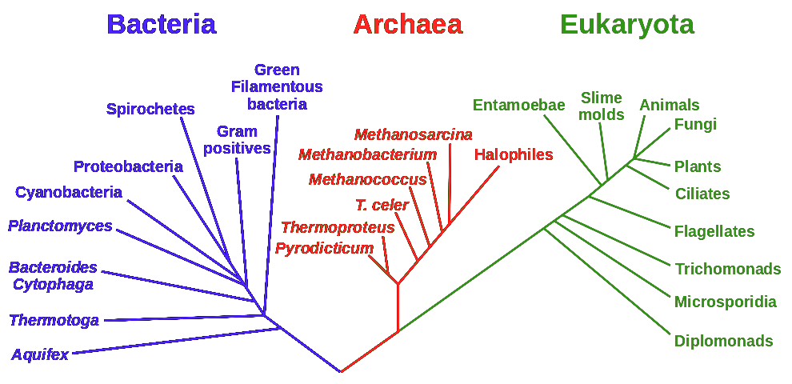
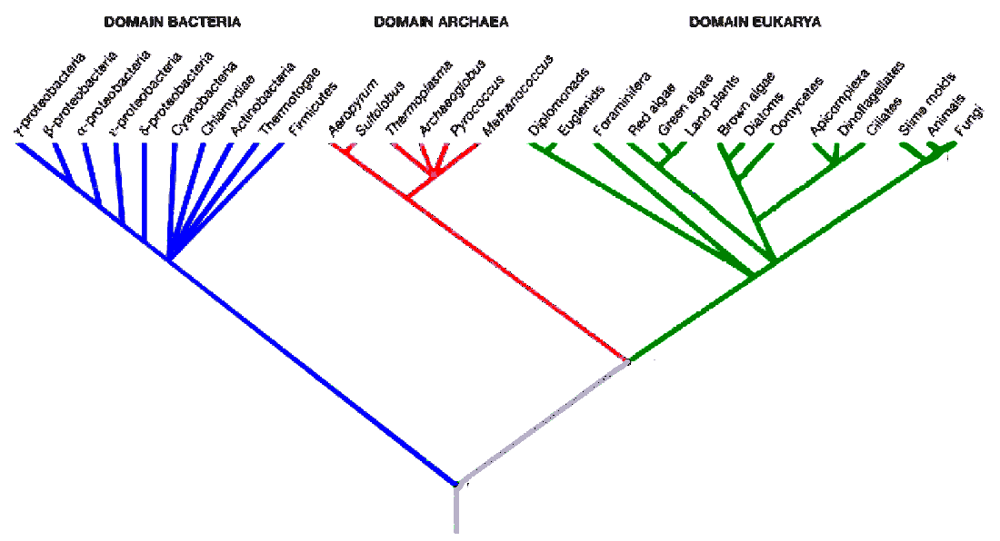

Biology for First Year Undergraduates
In 1665, Robert Hooke uses a crude microscope with about 30× magnifying power to look at cork (bark tissue) from an oak tree and describes small pore-like compartments invisible to naked eye. These structures are called cells.
Anton von Leeuwenhoek later builds a more powerful microscope (300× magnifying power and observed Paramecium in pond water, and cells in human blood and semen (spermatozoa).
In 1670s a researcher looking at plant leaves and stems with a scope concluded these structures are composed of many indiviudal cells. By 1800s, the accumulated data led to conclusion that all organisms consist of cells.
The smallest organism today are bacteria that are 200 nm long. Today the conclusion still holds: all living organisms are cells, which are structures that can utilize energy and produce waste to maintain a functional viability and even reproduce (grow).
Origins of Cells, Spontaneous Generation. Scientific theories have two parts: the first part is describing a pattern in the natural world, and second is to describe a mechanism or process responsible for creating the pattern. Hooke and others had detailed the pattern. Rudolf Virchow (1858) described the 2nd part by stating all cells come from pre-existing cells. This challenged a spontaneous generation concept in which life arises from nonliving components, which is a hypothesis, a proposed explanation.
Louis Pasteur decided to test the spontaneous generation idea by experiment. The prediction of this type is that it is something that can be measured or observed if the hypothesis is valid. In one experiment, Pasteur has a flask with a straight neck. He boils the broth to kill any living things pre-existing in the broth, then lets it cool. Organisms from the air will enter the flask neck and inoculate the broth and grow. This experiment see growth whether the spontaneous generation or all-cells-from-cells hypotheses were true, but it would be a useful control. Then Pasteur created a flask with a long neck tube like a swan: it creates a trap such that when the broth is boiled, water vapor is condensed in the trap when cooled. The airborne cells then enter the mouth of the swan neck of the flask, but the broth shows no growth. If spontaneous generation were true, we should still see growth. But if only all -cells-from-cells is true, the absence of growth explains this hypothesis.
In the same year (1858) that Pasteur established the all-cells-from-cells
explanation for life, Charles Darwin and Alfred Russel Wallace published their
short papers (authored separately) to the Linnean Society of London their ideas
on speciation and the common ancestry of all life. Darwin later published a
book The Origin of Species which brought all these papers into clarity.
The theory of evolution observed a pattern and then explained a mechanism or
process, as a biological theory. The two claims made by Darwin and Wallace were
that the species had a common ancestry (contrasting with the Biblical view in
Genesis) and that the species do not retain their characteristics constantly
through time, but that modification occurs generation after generation, and that
later generations are evidence of descent with modification.
Others
had already indicated the pattern of relatedness, but what was new was that Darwin
explained evolution by a process of natural selection.
Natural selection requires two conditions:
Natural selection affects individuals in populations. Some are less fit to survive to create offspring for the next generation, and so their heritable traits do not appear.
From generation to generation, a population of individuals may evolve from another to the point that the two populations have traits that create species, in a process called speciation. Examples of species being formed can be found today, in support of the theory of evolution that forms a tree of life.
Linnean taxonomy is a system to name and classify organisms. In 1735 botanist Carolus Linnaeus set out to create a classification to organize the concepts of nature. Taxonomic levels were created in this organization:
Humans are the species Homo sapiens. They are coincidentally the only member of genus Homo. They belong to the family Hominidae, which include orangutan, gorilla, and bonobo. Hominidae are grouped under an order called Primates, and this encompasses gibbons, monkeys, and lemurs. Primates are grouped in the class Mammalia, which includes rodents, bison, and species that have fur and produce milk. Mammals then join with other animals that possess notochords in the phylum Chordata. Finally this phylum joins all animals within the kingdom Animalia. Each of these levels of grouping is called a taxon. Linnaeus originally had two kingdoms, Plantae and Animalia. He classified sessile species able to produce their own food as plants, and organisms that were motile and eating organisms for food as animals. Some organizms do not categorize so easily however: Molds, mushrooms, and other fungi absorb nutrients from dead and living plants and animals, but were classed as plants because they do not move. With the discovery that bacteria do not have nuclei in their cells while cells of unicellular and multicellular species did have nuclei, the classification system became very complicated.
Since these findings, there have been many proposals to reform the Linneaen system. One was to propose five kingdoms in the 1960s:
Carl Woese looked at the idea of classification differently. The goal was to understand a true phylogeny to trace relationships. The basis of that was to study ribosomal RNA (rRNA), namely the sequence of RNA in the small subunit of the ribosome. The sequence dictates the biology of the organism, but it is also a trait or marker of the species. The small subunit rRNA has about 2000 bases: the sequence from all species can be obtained, and computer algorithms used to study relatedness of the sequences. This rRNA analysis has given rise to a new tree of life. Divisions are not between plants and animals, nor even eukaryotes and eukaryotes. Instead, three domains are used to describe life so not to confuse them with the traditional kingdoms: Eubacteria (Bacteria) Archaebacteria (Archaea), and Eukaryota (Eukarya). Both figures below are dendrograms to show the relationships, and distance between nodes is a measure of the degree of difference (not necessarily in time). The figure at the bottom provides a bit more detail for groups like the proteobacteria.
 
One thing to notice that this representation of molecular evolution indicates that if plants and animals are to be distinguished, then the number of kingdoms among prokaryotes will be dozens and dozens.
Research of most any type begins with a question about a natural phenomenon. For example, in biology, why do giraffes have long necks? Someone will speculate for an answer: because the function of the long neck enables to get food in their environment, and to compete with other species for access to food that is not available. This speculation is a hypothesis. It is an explanation, and a speculative one, because there needs to be prove that this food competition hypothesis is true. A test must be done to support the hypothesis. The first step in formulating the hypothesis is to produce a list of predictions that would prove it. The next step is to design a study to observe or experiment and see if the predictions hold true or are false.
If food competition hypothesis is true, then it should be possible to observe a population of giraffes with varying neck lengths, the ones with longer necks might thrive better under conditions where short-necked giraffes cannot reach food. Robert Simmons and Luc Scheepers however found that most giraffes feed by bending down, even in tall tree growth (they plotted feeding height vs. percentage of bites taken in feeding in plant growth available at many heights). There is still support of the food competition hypothesis, but an alternative was offered by Simmons and Scheepers: they proposed that long necks result from competition for sex. Giraffe mating involves males nuzzling the rumps of females who urinate into the mouths of males, by which the components in the urine may indicate to the male that the female is in estrus. Males, which usually have much longer necks, then come together in a contest involving the swinging of necks to exert blows against each other. The force of the neck swing is enough to cause the loser to lose consciousness or even die, but in most cases the male with the longer neck can generate more force (longer moment arm) than a shorter-necked male. The additional question is why males fight in this way at all, with their necks. The issue of the long necks is not fully setlled however.
Chili peppers. Chili peppers contain the chemical capsaicin which will bind to receptors in the epithelial tissue of mammals (especially humans) to give the sensation of something hot or burning. The peppers are the seed-containing fruit of the plant. Fruit is often consumed by the seeds are not destroyed in passing through the digestive system. When the p epper-consuming animal excretes the digestive waste, the seeds are present and ready for germination, and also have a ready supply of fertilizer. Since the animal moves considerably, the seed is dispersed. The directed dispersal hypothesis states that the plant produces fruit in a way that enables the seed to be consumed and not destroyed and to be excreted in a new location to germinate. To test this hypothesis, the cactus mouse and curve-billed thrasher bird are the most important fruit- and seed-eating animals where chilies grow. Earlier observations suggest that the mouse destroy seeds while the birds disperse them.
Biologists set up an experiment with three plants:
Hydrogen, carbon, nitrogen, and oxygen make up 96% of the mass of all biological organisms. The chemistry of these elements (atoms) is thus fundamental to understanding biology. The fundamentals of chemistry must also be understood:
Chemistry involves understanding how bonds are formed, and the types of bonds. Electronegativity refers to how an atom wants or is willing to give up electrons, and this is related to the desire to complete an electron shell of the valence (bond-forming) orbitals. Electronegativity will determine the bond types in chemical bonds: covalent, polar covalent, ionic. The number of electrons in the valence shell will also determine the number of bonds each element can form, and whether there will be pairs of non-bonded electrons that also affect the geometry of molecular formation. As to geometry, consider CH4, NH3 and H2O. The four protons of methane will form a tetrahedron from the positions of the vertices of the H atoms. With ammonia, the three protons form the base and the nitrogen atom the point of a pyramid, although the nonbonding pair could extend to be tetrahedral. With water, the three atoms form a simple 2D plane.
Water is a vital molecule for all living things. Cells are 75% water by volume. 70% of body mass is water. A loss of 2% of body water can lead to weakness, dizziness, irritability, headache, difficulty urinating. Water is an important solvent because its polarity and it can form hydrogen bonds. The abundance of oxygen and nitrogen atoms in biomolecules make interaction with water likely.
Among the useful properties of water is cohesion: this is a feature
of H-bonding which allows the molecule to strongly interact with itself.
Adhesion is a property that allows molecules to interact with molecules
different from the molecule. Water as a liquid will adhere to solid surfaces
that have a polarity or charged component. The meniscus formed by water in a
container is an example of adhesion of water molecules on the inner surface
of the container. Cohesion of water with itself causes a downward pull
,
and so both adhesion and cohesion contribute to the formation of meniscus.
Cohesion accounts for the high surface tension of water also. Surface
tension refers to the resistance of a substance to increase its surface area
in interaction with an interface (surface) of substance of unlike molecules.
All liquids have a surface tension, but that of water is due to its property
of H-bonding.
Why Ice Floats. Density is mass divided by volume, and the density of pure water at slightly above 0° (freezing) is 1.0 grams per cubic centimeter. Things that are denser than water will sink in it. But things that are less dense than water should float. Frozen water—ice—will float, meaning it is less dense than water. The property of water as being dense means it can sustain life as we know it. If ice were more dense, it would stay frozen in the cold depths and the oceans would have remained frozen solid, making life impossible.
Another useful property is its high specific heat (heat capacity). The specific heat is actually the amount of energy required to increase by 1° C 1 gram of a substance. By convention, amount of heat at 25° C is used. Water requires 4.18 J to heat. Ammonia is a strong hydrogen bonding molecule too and requires 4.70 J. Ethanol requires 2.44 J to heat 1 g to 1° C. Ethylene glycol requires 2.22 J. Of those molecules with little or no hydrogen-bonding, benzene, 1.80 J; xylene, 1.72 J; and sulfuric acid, 1.40 J. The heat of vaporization is the amount of energy required to change water from liquid to a gas. This evaporation is the basis of cooling during sweating.
Additional principles of chemistry in biology include acid-base reactions and the concept of buffering. Additionally chemical reactions, their mechanisms, equilibria, potential and kinetic energy, entropy, the laws of thermodynamics (first: energy is conserved; second: entropy always increases in an isolated system); reactions are heat-absorbing (endothermic) or heat-releasing (exothermic). If change in Gibbs energy (ΔG) < 0, then reactions are spontaneous (exergonic); endergonic reactions are those where ΔG > 0.
Question: what happens to chemical reaction rates when temperature and concentrations of reactants are increased? The rate increase hypothesis is that reaction rates increase with either temperature or reactant concentration. The null hypothesis is tath there is no effect on rate. An experiment is set up with bisulfite and iodate: 3 HSO3− (aq) + IO3− (aq) ⇔ 3 HSO4− (aq) + I− (aq). The experiment tests temperatures from −1 to 50° C, with numerous points. For the reaction concentration, three different conditions are tried at a constant temperature (T = 23°: bisulfite at 83, 83, and 170 mM, and iodate at 5, 10, and 10 mM respectively. Then multiple replicates are done with those three trials. Then the reaction rate (the inverse of time to completion) is measured vs. temperature or concentration trial conditions. The results did show that temperature and reactant concentration increases increased the reaction rate.
Biochemistry is about the chemistry of biomolecules, and biochemistry is a subset of organic chemistry. Organic chemistry is about the chemistry of carbon. Life begins with understanding the chemistry of carbon. There is a hypothesis fundamental to the basis of chemical evolution. In primordial earth, there is liquid water and the gaseous atmosphere. In the atmosphere there would be CO, N2, CO2, H2, NH3, and H2O (as vapor). In water, there would be few dissolved molecules (just pure H2O). As light energy comes to the Earth, the following reaction occurs: CO2 (g) + H2 (g) → HCHO (g) + H2O (g). NH3 + CO → HCN + H2O is another possible reaction, with formation of cyanide and formaldehyde. By heating hydrogen cyanide and formaldehyde in a water solution, we can form even more compounds: glycine, ribose, acetaldehyde.
Alexander Oparin and J.B.S. Haldane proposed a chemical evolution hypothesis in 1923. In their hypothesis, they assumed that HCHO and HCN are formed from H2, CO2, CH4, and NH3. HCHO and HCN react to form amino acids, sugars, and nitrogenous bases, and they call this the prebiotic soup. These link to form proteins, carbohydrates, and nucleic acids. Life becomes possible when one of these molecules acquires the function of self-replication.
An important molecular class are proteins. Proteins provide many functions to cells: defense (antibodies and complement), movement (contractile proteins such as actin and myosin), catalysis (all enzymes speed up reactions that have high activation energies), signaling (peptide hormones) structure (polymeric proteins forming fibrils, or membranes).
Miller's Origin-of-Life Experiment. In 1953, Stanley Miller tested the theory of chemical evolution by connecting a large glass flask with methane, ammonia, and hydrogen gases to a smaller flask with 200 ml of water, representing primordial ocean and atmosphere. Miller boiled the water in the smaller flask, whose vapor went to the larger flask, and this fluxed continuously. But none of the chemical components changed: water, hydrogen, methane, and ammonia remained in the same quantities, even at 100° boiling input of heat. Miller added electrodes to the larger flask to create discharges, creating the effect of lightning. The solution in the boiling flask changed color, becoming pink. After a week, it was deep red and cloudy. He found large amounts of formaldehyde and hydrogen cyanide.
Proteins are composed of amino acid polymers. Each of the 21 amino acids has a side chain which has one or more functional groups that confers a kind of chemistry to it. Proteins have levels of structure: primary, secondary, tertiary, and quaternary. While the sequence of proteins typically dictates how it will fold and form these structures, folding may also be accomplished by special proteins called molecular chaperones. Many chaperones are heat-shock proteins: after a rise in temperature, they may be necessary to speed refolding any denatured proteins. In particular are the case of prions (protein infectious particles) which are abnormally folded proteins that induce abnormal folding in other proteins.
As enzymes, proteins lower the activation energy of biochemical reactions. Turnover in enzymes can be as slow as a few reactions per minute to as many as 106 per second (carbonic anhydrase). E. Fischer proposed a lock-and-key mechanims of enzymes in 1894. Enzymes were proteins that bound substrates and had an active site that catalyzed the reaction. Later enzymes were predicted to be flexible in conformation and substrate binding was believed to cause an induced fit prior to catalysis. Enzymes can have cofactors, which can be metals like Zn2+ or Mg2+, or small organic molecules which are coenzymes. Enzymes can be inhibited and regulated as well (sometimes indistinguishable). The rate (velocity) of enzyme reactions is often a function of substrate concentration. When substrate levels are low, increases in concentration show an increase in the rate of reaction. When substrates reach a high level, the rate does not increase but plateaus out, showing saturation kinetics.
The discussion of nucleic acids is vital because of the belief that life started as a nucleic acid, specifically RNA. One important aspect of life is that reproduction is vital to living things. Thus a molecule needed to make a copy of itself. Another attribute of life is metabolism, which are the series of chemical reactions used to harness the energy for reproduction. These must occur in a membrane-bound space too.
Nucleic acids are composed of ribo- and deoxyribonucleotides. The nucleotide is composed of phosphate, ribose or deoxyribose sugar, and nitrogenous base. In the theory of chemical evolution however, while amino acids are thought to have been abundant, no experiment has shown the formation of a nucleotide. In the prebiotic soup experiments, the heating of HCHO in solution will form all of the 5- and 6-carbon sugars (pentoses, hexoses). These are all produced in equal quantities. So how would ribose come to be the dominant sugar in DNA or RNA?
One chemical evolution problem is how the pyrimidines (C, T, U) came to form. (Purines are readily synthesized from HCN, found in the soup, and both A and G have been found in the spark experiments.) Since RNA is considered the first polymer to exist as a biomolecule, a hypothesis must be put forward to account for how it could occur spontaneously. Nucleotides may have existed in an activated form (as di- or triphosphates). These may have polymerized on the surface of very small grained mineral particles (those found in clay soil). Experiments with these clay particles and radiolabeled activated nucleotides were done in which a reaction was allowed to occur for one day, then a fresh batch of activated nucleotides is added. This was done over 14 days, and samples were analyzed by gel electrophoresis and autoradiography. RNA molecules up to 40 nt were observed.
DNA has a secondary structure that was determined by Watson and Crick in 1953.
It was already known that DNA was a polymer formed by phosphodiester linkages.
E. Chargraff had determined that the total number of purines and pyrimidines
is identical (A + G = T + C), and that T = A and C = G also. Additionally,
R. Franklin and M Wilkins had found the difference between groups of atoms in
DNA from X-ray crystallography: data showed periodicities of 0.34 nm, 2.0 nm,
and 3.4 nm, and there was an indication that DNA had a helical or spiral symmetry.
W and C had determined that the helical width was 2 nm (20 Å), and that
0.34 nm was the distance between the stacked bases in the polymer. The 3.4 nm
distance they determined to be the length of one spiral turn of the helix,
approximately 10 stacked bases. Combining with Chargraff's findings, they
deduced that DNA had a double strand in which opposing strands ran in an
anti-parallel fashion. They developed a base-pairing scheme with hydrogen
bonding between bases of the strands. And they showed the helical winding
created a major and minor groove
.
DNA is an ideal molecule for a stable form of genetic information. RNA can degrade quite easily because of the possibility of self-cleavage of the polymer by the 2′-hydroxyl. Can DNA by a catalyst? Likely not. DNA can assume only a small number of 3D structures, and those could not be good at folding in a way to provide a great many reactions.
RNA was once thought to have a function only in the transcription of DNA and translation into protein until Altman and Cech had led research showing that RNA had catalytic properties, as molecules of ribozymes. Studying Tetrahymena, they found that phosphodiester bonds could be hydrolyzed or formed. They could also be used to form peptide bonds between amino acids. But in order to show that RNA is the molecule that catalyze its own copying or replication. Proving this in the laboratory would be useful.
Wendy Johnston and others in D. Bartel's laboratory wanted to find a ribozyme that catalyzes the addition of rNTPs to an existing strand by complementary base pairing. This would constitute and RNA replicase. If a RNA replicase existed, it would have to have a certain sequence. But what is it? Perhaps the best approach is to randomly generate billions of large RNA molecules with a unique base sequence, and then incubate them with smaller RNA templates (21 nt) with short (7 nt) primer RNA molecules that bind to the 3′ end of the 21 nt RNA templates. The next step is to incubate the large RNA molecules with the RNA template + RNA primer, and then examine which large RNA molecule batches best extend the complement from the primer. These are the candidate ribozymes. Now make many copies of the candidate ribozymes so that the sequence is altered, and repeat the experiment with template+primer extension another 17 times. This refines the ribozyme sequence to make it the most efficient. In round 18, the scientists analyzed the ribozyme batch with template and could detect that 14 bases were added by 24 hours.
At this point the student is introduced to carbohydrates as having the
formula (CH2O)n (carbon-hydrate
). Sugars
can be monosaccharides, oligosaccharides, and polysaccharides. Trioses are
3-carbon sugars, tetroses 4-carbon, pentoses 5-carbon, and hexoses 6-carbon.
Galactose is an isomer of glucose (4-epimer). Linear forms of the sugar can
open and close to form a hemiacetal ring, in which carbon-1 hydroxyl can be
on the oppoosite side as the carbon-6 hydroxymethyl of the ring plane, the
α-anomeric configuration, or on the same side, the β-anomeric
configuration. In equilibrium, the β form is present in slightly higher
levels because it is more stable.
Carbohydrates are easily formed in chemical evolution. The heating of formaldehyde will form all of the pentoses and hexoses and some of the heptoses as well. The ketotriose dihydroxyacetone was recently found on the Murchison meteorite.
These sugars will form rings, and these rings will polymerize by condensation to form glycosidic linkages and large polymers. Because their are two possible anomers, α and β, the linkage must specify which. In addition, the linkage can be with any of the hydroxyls on carbons in the ring. In nature, the polymers formed by organisms are special:
Peptidoglycan. Also called murein, while this structure is not exclusively carbohydrate in nature, this is the basis of the cell wall in bacteria, which cannot produce cellulose. The carbohydrate portion is a 1:1 copolymer of N-acetylmuramic acid (MurNAc) and N-acetylglucosamine linked β 1→4. On carbon-3 hydroxyl of MurNac is attached [hydroxyl]-CH(CH3)-C(=O)-4|5peptide. 4|5peptide is either a tetra- or pentapeptide, depending on the bacterial species. In E coli, it is the sequence (L-Ala)-(D-Glu)-(meso-diaminopimelic acid)-(D-Ala). Then two 4|5peptide branches are connected by an bridging peptide of 5 glycine residues. This composes the peptidoglycan wall.
Carbohydrates were very unlikely in the origin of life models. They would not have formed polymers under the conditions of the prebiotic soup. Glycosidic linkages of all the carbohydrate polymers only form by enzymatic action. Additionally, ribozymes that form in the prebiotic soup do not catalyze polysaccharide formation. Monosaccharides also lack functional group diversity as opposed to amino acids. Polysaccharides form simple secondary structures moreover, and no catalytic activity have been attributed to them unlike with RNA. Polysaccharides show no form of pairing or replication which demonstrates that they could have provided information.
Carbohydrates can be structural molecules, but also provide energy for metabolism by their oxidation. Carbohydrates also have structures that can indicate cell identity or type, as glycoproteins directing cell movements, cell-to-cell adhesions, and identification self to immune cells.
As sources of energy, the C-C and C-H bonds in carbohydrates get oxidized down to carbon dioxide.
Beside a catalytic self-replicating molecule that could code for life, another feature would be the enclosure of a system within a membranous sac. Polymerization may have first occurred on clay surfaces, but later on, it could have occurred on surfaces of lipids forming a membrane. Within a membrane enclosure reactants are brought together in higher concentrations.
It is generally accepted that lipids existed in the prebiotic soup. Miller's experiment was found to produce two lipids in fact. A. Bangham in the late 1950s looked at lipid-water mixtures with TEM to understand the ultrastructural features, and he observed the formation of vesicles, which would have easily produced the primordial cell. The formation of phospholipids would have been ideal: one part forms a (negatively) charged region to interact with water, while the other creates a hydrophobic portion that interacts with other lipid molecules and excludes water. Liposomes can be created by the sonication of phospholipids of varying types to form vesicles with different properties.
Membranes show a selective permeability. Permeability can be measured using numeric value (coefficient) that measures the rate by which an ion or molecule can pass through a lipid membrane. For lipid bilayers, permeability can be seen by the class of molecules or ions:
The small uncharged with no to little polarity will cross the membrane. But the large uncharged and ions do not really cross.
Permeability is also affected by the degree of unsaturation of a lipid forming the bilayer. Experiments with liposomes where degree of unsaturation is controlled in the composition reveal this property. As unsaturation in a pure lipid is increased, it can go from being a solid fat to a liquid oil.
Cholesterol is a fairly rigid molecule without a lot of saturation. The effect of including it in membranes increases the density of the hydrophobic portion and it also reduces membrane permeability. Phospholipids were mixed with varying concentrations of cholesterol (0, 20 and 50% by molar ratio), and the permeability of the membrane to glycerol after liposome formation was tested at different temperatures. As the proportion of cholesterol increased, the permeability was reduced, although in all cases of increasing temperature, permeability is increased.
Temperature and Membrane Fluidity and Permeability. Temperature is also important. At 25°, the phospholipids in plasma membranes are effectively oils. As the temperature drops, the fluidity decreases, and the membranes can actually solidify. Following labeled individual molecules shows that lateral movements within the 2D plane of the membrane are 2 µm/s, which means a molecule can travel the length of a bacterial cell within one second. An interesting thing is that phospholipids do not cross (flip) from one monolayer to the other.
In understanding the importance of membrane formed by lipids as a barrier between two compartments, it is important to understand concepts of diffusion, concentration gradients (and the relationship to entropy), and osmosis. It is also important to understand hypertonic, hypotonic, and isotonic.
Knowing that plasma membranes had as much protein by mass as lipid bilayer, in 1935 H. Davson and J. Danielli proposed a model for the plasma membrane that had the bilayer sandwiched between intra- and extracellular layers of protein bounding the membrane. Electron micrographs appeared to support that model, although they were primitive. S. J. Singer and G. Nicolson in 1972 proposed another theory, knowing that proteins had amphipathic character to them. They proposed a fluid mosaic model, the mosaic being proteins spanning the membrane interspersed within (integrated to) the membrane. Evidence for this model was provided by the development of freeze-fracture scanning electron microscopy (in the 1970s). The nature of the specimen preparation allows for the splitting of one monolayer of the membrane from the other, and to observe the abutment of the monolayer split off.
We soon understand that some proteins pass through the membrane, and these are integrated membrane proteins, or transmembrane proteins. Other proteins are just found on one side of the monolayer, but clearly belong to the monolayer, and are peripheral membrane proteins. To study membrane proteins, scientists in the laboratory use special detergents to make them soluble and hopefully without destroying the structure or function of the protein.
Three broad classes of membrane proteins involved with the passage of ions and molecules have been identified.
Channel proteins are those that basically form a channel for the specific movement of ions where there is an existing concentration gradient. One such channel protein was identifed by the antibiotic gramicidin, itself a peptide produced by Bacillus brevis. The bacterium uses gramicidin as poison for other bacterial species to prevent their growth; it forms a resistant coating around its own membrane to prevent gramicidin from poisoning the host producing it. What gramicidin does it kill the other bacteria by causing them to leak ions. Experiments done with planar lipid membranes with electrodes on two sides, and the addition of gramcidin to measure electrical currents (flow of ions) shows that when gramicidin is added, ions flow; when not present, there is no flow. Thus gramicidin formed an ion channel. Additional study showed it was selective, allowing only cations to pass: H+ is most permeable, followed by K+ and Na+. 3D structure studies of gramicidin shows that the 15 amino acid-peptide forms an α helix through the bacterial membrane with a large pore down the long axis.
Aquaporins happen to be channel proteins that allow H2O to pass at a rate 10 times faster than through the membrane itself. No other ion or molecule is allowed. Investigations of specific K+ channel proteins show the mechanism by how particular ions are selected. The channel protein maintains a closed configuration normally. But when the correct ion is bound at the entrance of the channel pore, it triggers a change in conformation that puts it into an open configuration, and the ion is shunted through. In all casas, channel proteins provide passive transport, requiring that the driving force of the molecular movement is an electrochemical gradient, and that Gibbs free energy is less than zero. Channel proteins enable facilitated diffusion.
Transporters. Also called carrier proteins, and like channel proteins in that they use as the driving force electrochemical gradients, they are involved in the specific movement of molecules across the membrane. A classic example is the GLUT-1 glucose transporter. Scientists prepared membranes from erythrocyte ghosts (ghosts are made by bursting cells in hypotonic solution and recovering the membrane. When gluose solution was added on one side, the RBC membranes were more permeable to glucose than pure bilayers. Proteins were purified, and when tested by constructing liposomes with these proteins present, one was found that transported Glc at the same rate as living cells. It was specific for D-glucose, not the L-form. The mechanism is likely a Glc molecule occupying a position at a gate on GLUT-1, and then it becomes a key that triggers the opening of a lock, allowing the molecule to pass through.
Pumps. Certain proteins harness energy to move specific ions and molecules along, usually moving them across the membrane against the electrochemical gradient. A classic example is the Na+/K +-ATPase. Step 1 involves binding three Na+ to high affinity sites on the intracellular side of the protein. The protein is then phosphorylated by ATP at a position on the intracellular side. This induces a conformational (shape) change that opens the pump on the extracellular side and closes it to the intracellular side. This conformational change reduces the affinity for Na+ ions as well, which diffuse into the extracellular fluid. It also opens two high affinity sites for K+ ion, which bind from the extracellular space. When they bind, the phosphate group is hydrolyzed, and this induces a conformational change back to the shape that opens the pump entrance to the intracellular side. The affinity for K+ is low now, and so the two K+ ions diffuse into the intracellular fluid. The net effect is as follows: ATP undergoes hydrolysis to ADP and Pi, with the release of its energy harnessed in causing a two-state conformational change in a pump protein. Three Na+ ions are moved out, and two K+ ions are moved in. This will create a chemical gradient for Na+ and K+. It will also create an electrical gradient, with more positive charge on the extracellular side of the membrane, and more negative charge on the intracellular side. Note that other such pumps exist for other ions (e.g., H+ and Ca2+) and for molecules too.
Features of the cell are now introduced. The concept of a plasma membrane has been discussed. In classifying life according to morphology, a distinction is made between prokaryotes and eukaryotes. According to molecular phylogeny and to evolutionary biologists (based on RNA analysis), life is divided into three domains: Bacteria, Archaea and Eukarya. Still two of the domains are prokaryotic, and the third defines eukaryotes.
The first thing to take notice of is that these cells bound a fluid called the
cytoplasm (cell-formed
). Its contents of molecules and ions
is hypertonic relative to the extracellular environment. Thus water can rush
in from the osmotic pressure and literally explode the cell. This is prevented
however because prokaryotes have a rigid cell wall that counteracts the
force (osmotic pressure). This cell wall also features glycolipids, which are
used in other ways to protect the cell.
Prokaryotes have a genome composed of a single circular chromosome that is not bounded by a membraneous organelle called the nucleus: this is what distinguishes the prokaryote from eukaryote. Nonetheless the intracellular space in which the chromosome is found is not entirely like the rest of the cytoplasm, and its space is called the nucleoid. Ultrastructurally, the nucleoid occurs centrically in the cell and takes up 20% of the total cell volume. If the circular chromosome of E coli were cut once to make it linear, its length would be 1 mm, 500 times the length of the cell itself. The DNA is thus supercoiled to make it compact.
Plasmids. In addition to the main circular chromosome, bacteria contain very small circular supercoiled molecules of DNA, numbering from one to 100, called plasmids. The genes they contain are usually not vital to the life of the bacterium, but can be if it gives an advantage in environments where bacterial growth is prevented or when the bacterium is threatened.
Also visible ultrastructurally are ribosomes, with as many as 10,000, always active in providing protein synthesis. The assembled ribosome with its large and small subunit can span 200 Å × 300 Å, enabling its visibility.
Flagella are clearly visible for bacteria with motility, usually aquatic species. They are few in number when present. 40 different proteins are involved in constructing the flagellum. Their rotation (spinning) to move the bacterium can make it move 60 lengths of the organism per second. (Note that the cheetah can only sprint 25 of its body lengths per second.)
Internal membranous structures. While the distinguishing feature between eukaryotes and prokaryotes is usually organelles having cell-like membranous bound structures, photosynthetic bacteria require such structures to perform their function. These are derived by infoldings of the plasma membrane with an accumulation of pigments and proteins involved with photosynthesis, and the infolded membranes stack upon one another. Technically, these structures qualify as organelles just they do in eukaryotes. Other organelles include calcium-storage vesicles, and others include crystals of magnetite: these actually allow the bacteria to find their location in a magnetic field and swim in directed way.
Fibrillar proteins. Polypeptides can interact in a self-like way to
form fibers (fibrils) and thus form a rope
or cable. These can perform
several functions, in particular forming in internal framework as a
cytoskeleton. These are required for some functions, in particular to enable
cell division.
There are vast differences in the generic eukaryote compared to the prokaryote. The first noticeable difference is size. Most eukaryotic cells range from 5-100 µm in diameter, while prokaryotes are 1-10 µm. Another difference is that eukaryotes are composed of many membranous structures which are clearly organelles. Some of these organelles appear to resemble the bacteria and archaea, and it is believed that the first eukaryote acquired the ability to survive by ingesting bacteria and archaea. The fact that eukaryotic cells actively engulf and have structures to breakdown and consume prokaryotes (as a defense) suggests that this is the case.
Because of the larger size of the cells, eukaryotes acquired a problem in that chemical diffusion is too slow to compensate for the need to make a chemical available to processes. For example, ATP produced on one side of the cell cannot traverse quickly enough to point in the cell where it is needed. That would be true if the eukaryote was nothing but cytoplasm. But eukaryotes fixed that by the use of organelles. It compartmentalizes biochemical reactions for one thing, increasing efficiency and enabling the making of local gradients both chemical and electrical. Organelles are evenly distributed usually around the cell so that no one side is left without.
Nucleus. The largest organelle in the eukaryote (typically), its function is to contain the genome and to make sure part of it is transcribed to provide the genetic information for coding protein and metabolism and function of the cell. The membrane is called a nuclear envelope, studded with pore-like openings. On the inner surface, are fibrous proteins forming a lattice called the nuclear lamina. Chromosomes then attach to the lamina in one or more locations. Many cells also contain a nucleolus: this is a space within the nucleus where rRNA molecules are actively transcribed, and the proteins for the ribosome are imported from the cytoplasm into the nucleus for assembly.
Cytosol. This part of the eukaryotic cytoplasm is everything within the cell not bounded by a membranous organelle. Within this space are the ribosomes, usually numbering in the millions. The eukaryotic ribosome is larger than the prokaryotic, in molecules and assembled dimension.
Endoplasmic Reticulum, Rough and Smooth. The endoplasmic reticulum
(inside-formed network
) is a series of membrane-bound vesicles and tubules
that has continuity with with the outer membrane of the nuclear envelope.
When observed ultrastructurally, ribosomes can associate with the ER membrane
and give it a studded appearance (rough ER). Ribosomes on the rough ER
are structured to synthesize proteins that will either be secreted from the cell
or which will be integrated into the plasma membrane or the membranes of certain
organelles, such as the lysosome. Other parts of the ER in the cell have no
ribosomes attached: this is the smooth ER, and it is involved in lipid
biosynthesis or in breaking down lipids that are foreign (and potentially
poisonous) to the cell. The smooth ER also acts as a local storage pool of
Ca2+ ion, which is stored in high concentrations of the lumen, and
which enters the cytosol as a signalling mechanism when mtetabolic functioning
of the cell is to be changed.
Golgi Complex. This is a part of the cell featuring a series of flattened, membranous sacs/vesicles called cisternae, stacked against each other. The arrangement has a clear polarity, the poles being cis and trans in designation. The cis pole membranes joins with rough ER vesicles, and the trans pole membranes form new vesicles that leave the Golgi for the plasma membrane. During the transition from cis to trans poles, the proteins undergo biochemical modifications, namely glycosylations, that turn them into glycoproteins which are typically integrated into the cell surface or secreted from the cell into the extracellular space.
Peroxisomes. These are found in nearly all eukaryotic cells and their presence is not a specialization unique to a cell type. They are bound by a single membrane. Their purpose is to conduct biochemical reactions related to oxidation. This oxidation often generates hydrogen peroxide (H2O2), which is quite destructive to the phospholipids of all membranes (organellar and plasma membrane). Within the peroxisome is the enzyme catalase, which rapidly breaks down hydrogen peroxide to water and oxygen. The membrane tries to contain the generated peroxide so that it can be converted without diffusing away. Peroxisomes differ in their oxidative enzyme composition based on cell type. Liver cells use oxidation to detoxify foreign chemicals, including beneficial ones (drugs) and less than beneficial ones (toxins, poisons). Other peroxisomes specifically exist to oxidize lipids, a normal catabolic activity, to generate high energy compounds like acetyl-CoA used in synthesis of other metabolites. Glyoxisomes are special peroxisomes in plant cells that convert metabolites of photosynthesis into sugars whose energy can be stored. Seeds do not have glyoxisomes because they are not photosynthesizing, but have peroxisomes to convert fatty acids into glucose. Peroxisomes appear spherical ultrastructurally with diameters of 300-500 nm (0.3-0.5 µm).
Lysosomes. These can vary quite widely in size and function, depending on the cell. In plants, fungi, and certain other kingdom-level organisms, the lysosome is actually called a vacuole. In animal cells, they are used to chemically digest the luminal (interior) contents of the lysosome. The membrane has proton pumps that increase luminal H+ concentration to a pH 5.0 or lower. Other enzymes (acid hydrolases with optimal pH at a lower value) are present that break down a variety of biomolecules: proteins, polynucleotides, lipids, and carbohydrates. The smaller molecules (monomers) generated are then brought into the cytosol. The single membrane lysosome is about can reach diameters larger than 500 nm (0.5 µm). The way lysosomes work is by fusing with membrane-bound organelles. When something touches the plasma membrane of the eukaryotic cell, its response will be to invaginate and attempt to enclose the plasma membrane around it. This becomes a phagosome, and the process is called phagocytosis. As the phagosome is formed, a lysosome works towards it and fuses with it. In the fusion, which is the formation of a phagolysosome, the degradative enzymes and the acidic environment starts to chemically degrade the material in the phagosome. In a process called autophagy, the lysosome is recruited to degrade organellar structures that may be old or damaged.
Receptor-mediated endocytosis is a specialized process in which macromolecules bind to receptors on the plasma membrane, initiating invagination of the membrane to form a vesicle called an endosome. The receptor proteins are then recycled back to the surface of the plasma membrane for another cycle. The endosome acquires proton pumps that acidify the contents. In addition, it fuses with vesicles coming from the Golgi complex, transitioning from an early endosome to a late endosome. This late endosome then goes on to form into a functioning lysosome.
Endocytosis. Note that all processes that stimulate invaginations for plasma membrane to form an internalized vesicle are called endocytosis. Endocytosis has three forms: receptor-mediated endocytosis discussed above, phagocytosis already discussed, and pinocytosis, in which the cell basically envelopes merely the extracellular fluid.
Vacuoles. Vacuoles in plants and fungal cells are very large in these cells, taking up as much as 80% of cell volume. Rather than being used to catabolize macromolecules, they are used to store water or metabolites. Sometimes, vacuoles are used to encase toxins that are consumed by predators to stop predation.
Mitochondria. This is a double-membraned organelle, with an outer membrane that bounds the organelle simply. The inner membrane is more complex, with series of invaginations that are called cristae. The fluid encased by the inner membrane is called the matrix. Most of the soluble enzymes doing the functional work of catabolism are in the matrix. Membrane-bound enzymes are in the cristae. In addition, mitochondria contain small circular and supercoiled DNA quite similar to bacterial chromsomes, and mitochondria replicate their numbers without synchrony to nuclear and cell division.
Chloroplasts. Algal and plant cells have the chloroplast in which to perform photosynthesis. Like mitochondria, it is a double membraned organelle. But within the double membrane are a series of flattened stacks of membrane-bound vesicles. These are not continuous with the inner membrane. These are called thylakoids. Certain parts of the membranes are thicker than others, and these thicker parts are also stacked one on another: these are called grana, and look like stacks of coins. The fluid outside of the thylakoid vesicles but contained within the inner membrane is called the stroma. Chloroplasts also have small circular DNA, their own chromosome. Like mitochondria, chlorosplasts can replicate themselves.
Cytoskeleton. With the cell are fiber-like elements often composed of polymers of materials that are just protein, or often proteins modified with sugars and other molecules. The fibers have names: actin, microtubules, intermediate filaments, and so on. They may be involved in cell motility, cell shape and structure stabilization, or even metabolite transport. Many specialized (differentiated) cell types, show cell polarity, so the movement of materials from pole to pole is achieved by the skeleton.
Cell Wall. The cell wall is a structure that is outside and envelopes the plasma membrane. It is not found in multicellular animals, but rather in fungi, algae, and plants. It is typically composed of polysaccharides interacting to form a fibrillar (fibrous) structure. The primary cell wall of plant cells is generally cellulose. Plants may secrete additional chemicals to form a secondary wall composed of lignin.
Cell Structure Is An Reflection of Function. The structure of a cell will often reflect its function. Cell in the pancreas will have a lot of rough ER with secretory vesicles with enzymes to be activated in digestion. Testicular cells will have vesicles with a lot of lipid-soluble chemicals as signals. The cells in the leaves of plants will have the organelles set up for photosynthesis and the formation and transport of sugars. Root cells will show the storage of a lot of starch.
As indicated, the nuclear envelope is a double-membraned structure that has continuity with the endoplasmic reticulum. SEM micrographs of freeze-fracture preps also show nuclear pores, which are composed of at least 50 different proteins. TEM studies involving injection of gold particles into cytoplasm eventually showed that the gold was in the nucleus too, indicating that pores are doors for molecules. Later studies showed that passage is quite selective. Clearly DNA does not pass through the pore. Ribosomal RNA is synthesized in the nucleus, and the proteins to make ribosomes are brought into the nucleus, where ribosomes are assembled in the nucleolus. The completed ribosome is then exported to the cytoplasm. Many proteins of all kinds related with some function in the nucleus are imported to the nucleus from the cytoplasm. The traffic is heavy: about 500 molecules pass through each of the 3000-4000 pores every second.
Nuclear Localization Signal (NLS). The first studies of proteins that move into the nucleus were of viral proteins. It was observed that changing certain amino acids removed the ability of the protein to move to the nucleus, and so nuclear-bound proteins had an NLS on them. The protein nucleoplasmin is important in chromosome assembly in the nucleus; it has a globular core and has a series of tails extending from it. Injections into cytoplasm caused the protein to be quickly localized in the nucleus. Proteases were used to digest the tails from the core, and these were purified into to fractions. These were injected into cytoplasm again, and the protein cores stayed in the cytoplasm and the tails ended up in the nucleus. A sequence of 17 amino acids was eventually found to contain the contain the NLS in the tail.
Passage through the nuclear pore complex is regulated by importins and exportins. Passage is also an ATP-dependent process.
Proteins targeted to other organelles in the cell (mitochondria, chloroplasts)
also have signals. Small molecules and ions diffuse randomly but larger ones
like proteins have their relocalization tightly regulated. G. Palade and
coworkers studied how proteins traffic using pulse-chase experiments. He
pulsed
cells in a radiolabeled amino acid for a short time to label
proteins. He would then replace the medium with the unlabeled amino acid, which
has the effect of producing unlabeled proteins. Thus a population of molecules
are labeled and their fate can be tracked over time. In the experiments,
radiolabeled leucine was pulsed 3 min, then the medium changed with unlabeled
Leu. Cells can be prepared for electron microscopy and autoradiography to show
the movement of the label and track the proteins.
G. Blobel proposed that proteins bound for the ER and Golgi had a signal, probably on the first few amino acids. It was known that proteins that locate in the ER had 20 extra amino acids present when there was only the ribosome and no ER. If there ER is present, these 20 amino acids are clipped off. Recent work showed that as the ribosome synthesizes a protein directed to the ER lumen, the nascent protein binds to a signal recognition particle (SRP) in the cytosol. The SRP is a ribonucleoprotein (RNA + protein), and it has a receptor on the ER membrane. The synthesis of the protein continues, but the polypeptide is directed into the ER lumen. The entire complex of SRP and SRP receptor snips off the signal sequence, and leaves the protein in the lumen. Note that ER lumenal proteins are also folded by molecular chaperones.
Palade then discovered how proteins in the ER are moved to the Golgi. Using labeling experiments and differential centrifugation, it was shown that vesicles bud off the ER and then fuse into the cis face of the Golgi. The proteins undergo several modifications by glycosylating and deglycoslyating and other enzymes. The oligosaccharide modifications often dictate the transport/export fate of the protein and the vesicle.
For example, mannose-6-phosphate bind to protein in membranes of certain vesicles. The vesicles have proteins that interact with proteins in lysosomal membranes, and thus Man-6P will target proteins that are destined for lysosomes.
Ultrastructural analysis of cells shows fibrillar elements of various types:
Actin filaments are the smallest in diameter. They are formed by the fibrillar polymerization of actin, a globular protein. In animal cells, actin is so abundant in its presence in the cytoskeleton that it is 5-10% of the total protein by mass. The filamentous actin is composed of a single monoomer that forms two long strands that form a helical coil around one another that is 7 nm in diameter and has helical periodicity of 37 nm. The strands have a polarity, a plus and minus end. Microfilament growth occurs at the plus end and dissolves at the minus end in a process called treadmilling. Actin filaments are quite abundant under the plasma membrane. Groups of filaments organize into long bundle or dense networks and are linked to one another by other proteins. These can help stiiffen cells and give it shape by resisting tension (pulling). Actin also interacts with myosin in muscle contraction: ATP binds to the myosin head, and is hydrolyzed to ADP, and this causes the myosin head to interact with actin in a way that causes sliding movement of the actin. The movement of cells (cell motility) is the result of actin-myosin interactions to push cytoplasm in one direction, while actin polymerization is used to extend pseudopodia. In cell division, actin-myosin interactions cause a pinching of the membrane in a ring that complete cell division, a process called cytokinesis. In plant cells, actin-myosin interactions move cytoplasm around the cell, in a process called cytoplasmic streaming, moviing organelles and cytosolic fluid. This is because plant cells are formed with a cell wall that keeps them rigid.
Intermediate filaments refer to the size of the fibrils relative to other structures; they have a diameter of 10 nm usually. Intermediate filaments refer to a class of fibrils with different compositions, unlike microfilaments and microtubules. There is no polarity, and their synthesis and breakdown does not occur by treadmilling. The filaments have only a structural role. Filaments belong to a family of proteins that are the keratins. They provide ability to resist pressure and abrasion. 10 different types of keratins are produced and they can form fingernails, toenails, and hair. The nuclear lamins that make up the nuclear lamina are also intermediate filaments. They play a role in the breakup and reassembly of the nuclear envelope. Some filaments project from the nucleus through the cytoplasm to the plasma membrane, holding a shape to the cell and keeping the nucleus at a relative position.
Microtubes are composed of two types of globular protein subunits, α- and β-tubulin. These two join to form a dimer. The dimers then polymerize in a spiral manner to form a hollow tube that shows a plus-minus polarity just like actin. The tubule has a diameter of 25 nm. Microtubules are initiated from a microtubule organizing center, and grow outward. Plant cells have hundreds of these, but animal cells have only one, the centrosome. Centrosomes are actually two bundles of microtubules called centrioles, in which the long axis of one orients at the midpoint of the long axis of another centriole. Interestingly microtubules do not require centrioles from which to extend, and the real function of centrioles is not known. Microtubules function in providing stability and assist in cell movement, actings like girders in a skyscraper. They are required for organellar movement, and the ER will not form a network without them. In cell division, microtubules are required for separating chromosomes to the daughter cells. A study of the squid giant axon showed the vesilces are transported from the soma (where the main cell body and nucleus is) to the axon terminals. In vitro experiments with purified microtubules, vesicles transported by them, and ATP did not produce movement. Further addition of materials showed that a protein kinesin was required. Kinesin forms a superfamily of proteins of which kinesin-1 is a heterotetramer with two heavy chains and two light chains. Heavy chains have globular head forming a motor domain at the N-terminus and this forms a stalk α-helical coiled coil ending in C-terminal tail domain that associates with light chains. The stalks intertwine to enable the dimerization. The ATP-dependent movement likely has the head motor domain moving along the microtubule alternately stepping forward, rather than an inchworm movement with one head leading and the other catching up trailing.
Flagella and Cilia. These are present in both prokaryotes and eukaryotes, but the structures are radically different. Flagellin is the protein that composes the bacterial structure, while microtubules form the eukaryotic one with tubulin. The flagellum in bacteria rotate like a ships propeller, while eukaryotic structures undulate with a whipping back and forth. Additionally, flagella are enclosed in a plasma membrane in eukaryotes. These eukaryotic flagella are similar to ciia too, which also undulate. Unicellular eukaryotes either have cilia or flagellar, while multicellular eukaryotes have both: respiratory tract epithelia feature cilia while sperm have flagella in humans. The basic structure for both is the same though: a 9 + 2 arrangement of microtubules. There are 9 microtubule doublets that form radially along the circumference of the flagellum/cilium, and two central microtubules centrically located. The length of this structure is an axoneme, and the attachment point is a basal body, having a structure identical to a centriole. The 9 + 2 arrangement has a framework formed by proteins. The protein dynein forms between each microtubule doublet in the circumference to link them, while there are spokes that connect each microtubule doublet to the center where the two microtubules are. Gibbons used an inhibitor of axoneme action and found that no bending or utilization of ATP could occur. EM had shown the loss of arms had occurred and he showed the protein required was dynein. Flagella undulate when ATP binds dynein: the phosphorylated dynein changes shape and moves it along the microtubule similar to kinesin, but one of the members of the doublet slides along the other, and this transmits force to each of the links and the spokes. This results in the bending of the flagellum.
The focus is now on the plasma membrane and how its surface is configured to have the cell be part of community that forms a population among unicellar species or tissues in multicellular species. On the surface will be oligosaccharides that modify proteins (glycoproteins) or which are connected to phospholipids to form glycolipids.
Cell Wall in Plants. The primary cell wall of the newly formed plant cell is composed of microfibrils of cellulose that form multiple criss-crossing layers. Other oligosaccharides, pectins, become sandwiched in the layers and they are considerably hydrophilic, keeping the cell wall moist and fluid. These pectins and gelatinous polysaccharides are produced in the rough ER and Golgi, while the basic cellulose microfibril is polymerized on the plasma membrane by an enzyme complex. Plant cells acquire a high hyperotonicity which increase the turgor pressure of the cell against the wall. To enable growth and elongation at times, plant cells secrete expansins which cause the microfibrils to slide past one another for elongation and expansion. When plant cells mature and no longer grow, they secreate material to form a secondary cell wall between the plasma membrane and primary wall. Leaf cells on the upper surface might secrete a wax to prevent transpiration. Cells that form the stem may create a wall with significant lignin content, which involves cross-linking the wall to stiffen it.
Animal Cell Extracellular Matrix. Animal cells will secrete the materials necessary for form fibers or basement membranes. These are usually made of protein, but can be a polymer of protein and sugars (proteoglycans). The function of the ECM is to be more elastic and flexible than is the case for cellulose and lignin. Synthesis of these materials is done in the rough ER with Golgi processing and then exocytosis. Some protein-bound polysaccharides are made by membrane protein complexes. The ECM varies with tissue type. Bone and cartilage are rich in ECM that make it rigid. The ECM in lung tissue contains elastin to enable tissue shape changes with breathing movements. The ECM provides a foundation upon which cells may move. Actin filaments within the cell can connect with transmembrane proteins called integrins, and integrins being to the fibronectin component in the ECM, and fibronectin is connected to collagen. Desmosomes are structures that transduce cytoskeletal connections. Between cells are a lock-key interaction, and within the cells, interemdiate filaments that connect to the desmosome anchor proteins.
The plaque that forms on teeth is actually a biofilm that bacteria use to colonize themselves in the oral cavity. P. aeruginosa will secrete a signal to draw other individuals to form a biofilm and protect against loss of attachment.
Plant cells form a primary wall, but between each other they have a central layber, the middle lamella composed of primarily gelatinous pectins. Degradation of the middle lameella occurs enzymatically, when flower petals or leaves detach during the seasons.
Animals cells join in tissues with an intervening ECM and connect via integrins. In some tissues, particularly epithelial that form a layer forming a barrier between internal and external tissues, they need a stronger cell-cell connection. Tight junctions are where specialized proteins appear on the plasma membrane near the surface of the epithelial cell that is on the mucosal (external) side and bonds it tightly with other epithelial cells. Tight junctions provide the tightest barrier to the diffusion of extracellular fluid around cells, making the cells form a very interlocked barrier. The desmosome is another structure that connects cell-to-cell by a small patch. Proteins on the membrane between cells create an interlock, while connections to the transmembrane proteins inside the cell are to intermediate filaments. Thus desmosomes may represent the ability to produce coordinated connections of cytoskeleton intercellularly.
Cadherins. In experiments in the early 1900s, two different marine sponge species had their cells dissociated and then the cells were observed to see if they would reform into the same tissue. In the 1970s it was supposed that special proteins were involved. Scientists isolated the membrane proteins from certain cell types and then purified each protein. They then injected the purified protein into rabbit to produce antibodies to those proteins. From the blood, they purified those antibodies to each protein using an affinity purification procedure to the membrane protein. They would then add the purified antibody to a mixture of dissociated cells and observe whether the cells re-associate (a no-antibody control should always show re-association). Through this method, they hoped to identify the protein involved in cell-cell adhesion. In fact, the desmosome interlocking proteins were identified as a class known as cadherins.
Intercellular tunnels that connnect the cytoplasm between two cells were found for plants and animals. In plants plasmodesmata are formation where the plasma membrane between two cells join to become continuous, and thus opens a connection between the cytoplasm. Smooth ER even connects between these cells. The opening is not entirely barrier-free: only specific proteins can pass, so the plasmodesmata may be like a nuclear pore complex. Proteins that pass through are involved in intercellular coordination. In animal cells gap junctions effectively act as channel proteins do for a cell to the extracellular fluid: they allow the passage of small molecules and ions, especially when cells form a tissue that requires rapid coordinateed responses.
Multicellular organisms have cells and their tissues often separated from other cells in other tissues separated at a distance and must often communicate that a metabolic state exists or signal to other tissues to change their metabolic state. In these organisms, they use hormones to achieve this communication. Typically hormones are small molecules that can move or diffuse rapidly, and have processes that reduce their presence or existence when signalling or stimulation is not to be done. Examples of hormones and their molecular nature and their function are shown in the table below.
| Hormone | Molecular Structure | Function |
|---|---|---|
| ethylene | H2C=CH2 (gas) | stimulate fruit ripening, regulate aging |
| insulin | 51 amino acid peptide | stimulate glucose uptake by regulated tissues (liver, adipose tissue, muscle) |
| systemin | 18 amino acid peptide | stimulate defenses against herbivores in the plant |
| estrogen | steroid | stimulate sexual characteristics in female |
| brassinosteroids | steroid | stimulate plant cell elongation |
| prostaglandins | modified fatty acid | numerous functions |
| thyroxine (T4) | modified amino acid | regulation of metabolism |
| FSH | glycoprotein | production of ovum in females, sperm in males |
| auxin | small organic molecule | elongation of stem in plants |
Hormones bind to receptors whose numbers and affinity can be changed. Drugs acting as inhibitors can bind and block receptors to prevent hormone binding and action.
The signals come to the surface of the cell. If steroids, they might pass
through the membrane, then bind to a protein in the cytosol, which would then
translocate to the nucleus where the protein interacts with DNA to start
transcribing. In other cases, they might bind protein receptors which undergo
a change at the surace, which then create a second messenger
intracellularly
which causes changes in the signal.
G proteins are an example of such a class. A hormone binds to its receptor at the surface. Consider epinephrine. It binds to a specific receptor that is bound to a G protein of a special type called a stimulatory G protein (Gs) and composed of three subunits α, β, and γ. GTP binds to and activates the Gsα, which then binds to another membrane protein, adenylate cyclase. Already bound to the Gs multimer was a GDP compound, and it was displaced by GTP. Note that the Gsα-GTP complex is held to the membrane by a C16 phospholipid. But Gsα has an intrinsic GTPase activity: this will hydrolyze the γ-phosphate from the bound GTP and convert it to still-bound GDP. Gsα-GDP is inactivated, and it will retunrn to a receptor-Gsβγ complex and bind it, and await for another hormone binding event to occur. The second messenger made is cyclic AMP (cAMP) from ATP. A feature of a second messenger is that it must be small and rapidly diffusible and made in large quantities, and it must have a system for removing it quickly. An important feature of 2nd messengers is that they will have different signalling effects in different cell types. Additionally more than one 2nd messenger system may be active at one time.
Receptor tyrosine kinases (RTKs) are another class of signal tranducer. Hormones bind to the receptor which requires a 2nd hormone-bound receptor to be functional, forming a dimer. The tyrosine kinase domain is phosphorylated by ATP, activating the catalytic domain. The RTK binds to the membrane protein Ras through another briding protein. This results in GTP binding of Ras, which then triggers phosphorylation of another protein, activating it. A phosphorylation cascade begins.
These signals exist in plants too. In wheat seeds, the embryo produces gibberellic acid 1 (GA1) when growth starts. GA1 binds to cells in the starch storage section and the intracellular cGMP levels rises, stimulating transcription of the α-amylases. GA1 also stimulates increases in intracellular Ca2+, which promotes membrane fusion of vesicles in the endomembrane system through which the α-amylases will pass as they are readied for secretion by the ER/Golgi axis.
Signal termination. All second messengers need to be deactivated or removed to attenuate the signal. GTP is hydrolyzed to GDP in G proteins. cAMP is hydrolyzed to AMP by phosphodiesterases. Ca2+ is pumped back into its storage vesicles. When signal termination fails, such as when Ras protein becomes defective and does not convert GTP to GDP to shutdown, cells lose control and their proliferation is not stopped, possibly causing cancer. 25-30% of all cancers may involve a defective Ras protein.
The storage of potential energy in a catabolic process is into ATP. ATP uses that energy to cause phosphorylation, which can induce conformation changes in proteins, and cause the protein to perform in a desired way. ATP has considerable exergonic release energy at 7.3 kcal/mol. Considerable discussion must be paid to how ATP couples energy to reactions and how it uses phosphorylation to achieve an aleration in a metabolic process.
Reduction-oxidation reactions. These important class of reactions typically drive the formation of ATP. Redox reactions are all about transferring electrons from one atom to another, and harnessing the energy in ATP. A long explanation is given in which the bond energy is altered when electrons are moved from one atom to another. Electron movements also accompany proton movements, so that a hydride is basically transferred. The oxidation of glucose to carbon dioxide and water using oxygen will end up transferring 686 kcal/mole of energy. This energy is coupled ultimately to the formation of ATP.
An accidental discovery by Hans and Edward Buchner in late 1890s who were trying examining ways to produce yeast extracts for baker's yeast for commercial and medicinal use, they added sucrose to an extract intending it to be a preservative from food decay. But instead it was broken down and turned into alcohol. This revealed that fermentation could occur in vitro, until then thought only to happen in vivo. They learned also that the reaction proceeded to longer degree if phosphate was added. Fructose bisphosphate was found. In fact all of the compounds were phosphorylated except pyruvate and glucose. When the mixture was boiled, no fermentation occurred (1905). It was already known that enzymes were heat sensitive, so the process was believed to depend on enzymes. Most of the steps and reactions were eventually determined by Gustav Embden and Otto Meyerhoff, after whom the pathway is named.
Ten chemical reactions were revealed to occur in glycolysis. Some energy forms ATP from the coupled phosphorylation of ADP. Another reaction reduces NAD +, producing NADH by transfer of a hydride (two electrons and a proton). It is an electron carrier with reducing power. At the end of glycolysis, pyruvate is formed with the ATP and NADH.
In the first three steps, two ATP molecules are actually consumed rather than produced. Hexokinase is a Mg2+-dependent enzyme phosphorylating the inwardly transported glucose into glucose-6-phosphate. Glucose-6-phosphate isomerase then converts the aldohexose phosphate to the ketohexose phosphate fructose-6-phosphate. Phosphofructokinase (PFK) is like hexokinase, utilizing ATP (depending on Mg2+ again) to produce fructose-1,6-bisphosphate.
The enzyme aldolase then divides the 6-carbon-bisphosphate into two 3-carbon phosphates, one a ketotriose, dihydroxyacetone phosphate (DHAP) and the other an aldotriose, glyceraldehyde 3-phosphate (GA3P). The rest of the steps require GA3P as an entry point, so DHAP must be converted to GA3P to continue, which is done by triosephosphate isomerase.
In the next steps, the energy-yield reactions now occur. The -CH=O aldehyde in GA3P is simply oxidized with a coupled phosphophorylation, producing 1, 3-bisphosphoglycerate (1,3-PGA), using an NAD+-dependent enzyme, glyceraldehyde 3-phosphate dehydrogenase. That NADH can go on to produce 3 ATP. The next step is by 3-phosphoglycerate kinase: from its name, this enzyme would seem to catalyze the formation of 1,3-PGA from 3-PGA using ATP and producing ADP, but in fact, the enzyme works in both directions, and in glycolysis, it actually drives the formation of ATP rather than use it. Note that 1,3-PGA is actually an acid phosphate and the ΔG′° = −18.5 kcal/mol indicates that the formation of ATP is more favored.
Phosphoglycerate mutase is the next enzyme reaction, and enzyme with a forward and reverse reaction to convert 3-PGA to 2-phosphoglycerate in a Mg2+-dependent reaction. An intermediate 2,3-bisphosphoglycerate is actually formed, since the enzyme has a phosphate in its active site and swaps between the 2-hydroxyl and 3-hydroxyl. 2,3-BPGA is actually vital in regulating affinity of hemogloboin for oxygen.
In the next reaction, a very high energy intermediate is generated by the dehydration of the 3-hydroxyl and a 2-hydride on 2-PGA. This is carrried out by enolase and forms phosphoenol pyruvate (PEP). This high energy phospho compound is has even more energy than ATP. The hydrolysis of phosphate from 2-PGA has a ΔG′° = −17.6 kcal/mol; for PEP, it is −61.9 kcal/mol. The energy in PEP phosphate is recovered in the next reaction by pyruvate kinase. This is actually the reverse reaction of the enzyme, with ΔG′° = −31.4 kcal/mol. Unfortunately only one ATP is made, but the driving force of the reaction is to move 3-PGA towards pyruvate formation as an entry point to Krebs cycle.
The net reaction of glucose → pyruvate is to produce 2 ATP + 2 NADH.
Glycolysis is tightly regulated. Pasteur discovered more glucose being consumed
under anaerobic rather than aerobic conditions (the Pasteur effect
).
This was because much less ATP is produced by fermentation, so to sustain the
required level of ATP, the organism must break down more glucose. Points of
regulation of glycolysis are at the enzymes hexokinase, phosphofructokinase
isoform 1, and pyruvate kinase. High levels of ATP inhibit PFK. The strange
thing is that ATP is also a substrate. The 3D structure revealed however that
PFK has two binding sites. The high affinity site is for the substrate portion
near the active site. This means it only takes low concentrations of ATP to
occupy it and drive the reaction. The low affinity site however is on a
separate part of PFK: it requires high concentrations to bind it, and when it
does reach high levels, the enzyme is inhibited.
Pathological glycolysis. Cells of tumor tissues undergo glycolysis at rates far above normal tissues, because cells in solid tumors are generally hypoxic: in general, a cell more than 100-200 µm away from a capillary will show greater rates of glycolysis. Additionally cancer cells show lower presence of mitochondria, contributing to the need for glycolysis.
Once pyruvate is formed, what happens next depends on whether the organism is aerobic or metabolizing in an anaerobic way. Eukaryotes have mitochondria, and these are the centers of aerobic metabolism.
Pyruvate crosses the mitochondrial membranes into the matrix. Contiguous with the inner membrane and created by tubular invaginations are cristae. These effectively create a large surface area between matrix and the space within the cristae. The crossing through the outer membrane is via pores that permit molecular exchange. The inner membrane crossing requires a carrier protein that consumes ATP to move pyruvate. Once inside, pyruvate is bound to pyruvate dehydrogenase in a reaction that involves Coenzyme A, which binds an acetyl group to form acetyl-CoA and CO2. The reaction involves multiple steps with the formation of NADH, although the protons do not come from pyruvate. The reaction is highly regulated. When phosphorylated by regulatory protein kinases, the enzyme complex is inhibited; this occurs with high ATP levels. In contrast, when NAD+ or AMP or even CoA levels are high, the reaction is accelerated.
In elucidating the rest of the reactions that would produce CO2 from glucose, it was known that there were several carboxylic acids involved and none of them appeared to accumulate, although the order of their production could be determined. It was Hans Krebs who made the determination that the reactions did not occur in a linear fashion but rather likely occurred in a cycle, explaining how they would no accumulate. It was known that oxaloacetate was the endpoint of the pathway were it a linear one (it was the most oxidized of the carboxylic acids). The proof was found when oxaloacetate was mixed with pyruvate alone, and formed citrate. Since citrate was thought to be an intermediate in the linear pathway, if it was formed with pyruvate, it must occur cyclically. Krebs hypothesis was further confimed with the use of radiolabeled carbon atoms in the early 1940s. It also confirmed that two CO2 molecules were produced in the cycle, and which carbons they came from. Later work showed that it was acetyl-CoA that was all that was needed to start the pathway. The eight raactions that occur along with pyruvate dehydrognase are:
The net production is of three NADH, one FADH2, and one ATP (via GTP). The TCA cycle is regulated based on ATP levels. Citrate synthase is inhibited by high levels of ATP. With the dehydrogenases, as NADH levels increase, they occupy the active site an compete with NAD+, preventing oxidation. In the complete conversion of glucose to six CO2 molecules, a total 10 NADH, 2 FADH2, and 4 ATP are produced. Ultimately, all of the energy is produced as ATP.
Proteins in the inner mitochondrial membrane will process NADH and FADH2 in a series of redox reactions that will generate ATP, the ultimate energy carrier. In bacteria, this same set of reactions occurs in their plasma membrane. As electrons pass through from membrane protein to another, the conformation changes that is coupled to protons being obtained from the matrix, and then released but to the other side of the membrane. This has the effect of creating a proton gradient. An electrochemical gradient builds up: the protons are then passed to an ATP synthase whose conformation is again changed, but this is coupled to the formation of ATP from ADP and phosphate. In aerobic organisms, the final electron pair acceptor in the respiratory chain is oxygen, forming water as the end product.
These membrane proteins in the electron transport system have flavin coenzymes, iron-sulfur complexes, or iron-containing heme groups. The ETC has these components in which electrons are passed in this order:
Ubiquinone, or coenyzme Q, or just Q, is a lipid-soluble non-proteinaceious molecule that can traverse both sides of the inner mitochondrial membrane without being bound to protein. It is a quinone ring with long tail of isoprene monomers. Quinones play central roles in all electron transport systems in mitochondria (ubiquinone), chloroplast (plastoquinone), and bacterial (menaquinone) membranes. They are involved in one-electron transfers, forming the semiquinone radical QH•, or two-electron transfers to form the quinol (QH2). It carries both the electrons and protons.
The cytochromes are all heme proteins binding Fe atom which is 2+ in the reduced state. There are three classes, a, b, and c, named because of their absorption spectra. The cytochrome a class absorbs near 600 nm, type b near 560 nm, and type c near 550 nm. Usually they are named for their absorption maxima (e.g., cytochrome b562). The absorption maxima differ largely because of the side groups on the tetrapyrrole function of the heme ring: b cytochromes usually just have methyl, acetyl, and allyl groups (iron protoporphyrin IX), but a cytochromes can have one formyl and a trimer of isoprenes (Heme A). The heme groups in types a and b are not covalently bound to their apopproteins, but type c is by Cys sulfhydryls. While types a and b and some types of c are integrated in the membrane, mitochondrial cytochrome c is actually a soluble protein that binds on the outer surface of the inner membrane electrostatically.
The iron-sulfur proteins effectively have a cubic arrangement of Fe and S atoms, in which the Fe atoms can number 1, 2 or 4, called Rieske iron-sulfur proteins. Fe can be coordinated with either Cys S atoms or His N atoms. There are eight Fe-S proteins in mitochondrial ETC. Each Fe atom participates in one-electron transfer: Fe3+ → Fe2+ → Fe3+ ... Reduction potential varies from −0.65 V to +0.45 V.
NADH and FADH2 differ in their reducing power, with FADH2 having less reducing power.
Note that at Ubq, it is reduced by a separate entry point for FADH2 produced by succinate dehydrogenase, which delivers its electron pair by a different Fe-S protein.
The chain order was basically determined by using inhibitors (poisons) known the bind to certain sites. When antimycin A was included in the reaction, it could be determined that levels of reduced Ubq and cytochrome b accumulated. The change in free energy from NADH to oxygen is 53 kcal/mol.
Study of the structure of these ETC components in the membrane reveals an organization into four large complexes, along with Coenzyme Q (Q) and cytochrome c. In looking at the structure, the outer membrane is dissolved with digitonin. The inner membrane vesicle is purified and then osmotically ruptured. A detergent is added and the mixture separated by IEC into the four complexes.
In studying the electron transport chain, it was not shown that ATP could be formed by the addition of ADP. Mitchell in 1961 proposed instead that the electron train transported protons across a membrane, from the matrix to the intermembrane space or interior of cristae. A large electrochemical gradient would form, and this would drive the activity of the ATP synthase. This is the chemiosmotic hypothesis. Experimentally, it could be established as true by creating artificial vesicles containing the ATP synthase with and without bacteriorhopsin, which is also a membrane protein that functions as a proton pump in the presence of light. In creating the vesicles, ADP and Pi would be included because ATP synthesis might possibly occur inside the vesicle. The vesicles would be illuminated: in theory protons would be pumped out of the vesicle. The gradient would then drive the synthesis of ATP inside the vesicle, and the formation of ATP could be assayed. The studies of the mitochondrial and bacterial protein complexes that pump protons described above verified those studies, although they came decades later.
In 1960 Racker had experimented with vesicles formed from mitochondrial membranes, with some vesicles formed inside out. Membranes of the vesicles under EM showed a studded appearance. The bodies had a lollipop shape, with a stalk in the membrane and the knob sticking out. Vibration or use of urea resulted in the knobs and stalks falling off. Experiments with the dissembled stalks and knobs in the presence of ATP caused its hydrolysis to ADP and Pi. Vesicles with just the base had no effect on ATP, but the base did move protons across the membrane. The entire complex was thus an ATP synthase, with two components: F1 featured the knob with ATP hydrolyzing ability, and the membrane-bound, proton transporter was F0. The model was that protons flowing through F0 cause the stalk to spin. The attachment of long actin filaments to the stalk using a videomicroscope reveals that the knobs can rotate at 350 rev/second.
Research shows that about 30 molecules of ATP are produced for each molecule of glucose fully oxidized. 26 molecules are produced by the mitochondrial ATP synthase. (In the past, the yield was calculated to be 36 ATP which was not determined experimentally, but later Hinkle showed that the yield was far less and actually varies with conditions in the cell.)
The final electron acceptor in all eukaryotes is oxygen, as all mitochondria carry out oxidative phosphorylation. Some bacteria and archaea will use different electron acceptors from oxygen and electron donors not glucose. H2, H2S, and CH4 and ohter inorganic compounds will serve as electron donors. NO32− and SO42− can act as acceptors. However all such reactions create proton gradients that are used to drive ATP synthesis. Oxygen molecule has a high electronegativity and is therefore a more effective acceptor. Because the potential energy is larger with molecular oxygen, more ATP can be generated than when the acceptor is another molecule.
This is the pathway undertaken when oxygen is not available as an acceptor. Glycolysis produces a net amount of ATP and also NADH. But NADH cannot accumulate, as there is no unlimited supply, and it needs to regenerate NAD+ if glycolysis is to proceed at all.
All eukaryotes make use of generating ATP when oxygen is low or unavailable. Skeletal muscle used in a sprint will have enough glucose but not enough oxygen. In muscle. the pyruvate will accept the NADH generated in glycolysis by being reduced to lactate. This type is lactic acid fermentation. In yeast however, the 3-carbon pyruvate is converted to acetaldehyde with loss of CO2 and then the acetaldehyde is reduced with the NADH using alcohol dehydrogenase in the reverse direction to form ethanol.
Glycolysis, Krebs cycle, and the oxidative phosphorylation system all have points where other metabolic pathways enter and exit. These can be anabolic, in which smaller components are used to build larger components, often using ATP or energy in other forms, or they can be catabolic, with products that become waste and often yielding ATP.
Apart from carbohydrates such as glucose, other biomolecular classes include proteins and fats, which can be catabolized. With fats, they are catabolized primarily to glycerol, which enters glycolysis as GA3P and as acetyl-CoA, which can enter Krebs cycle. With proteins, they are broken down to constituent amino acids, and then the amino acids catabolized usually into pyruvate and acetyl-CoA.
In anabolic pathways, biosynthesis of DNA, RNA, phospholipids, amino acids and fats will occur. Humans can synthesize about half of the 20 amino acids they require, the rest must come from the diet. In synthesizing fats, it all starts from acetyl-CoA. To synthesize the ribose and deoxyribose for RNA and DNA, it starts with glycolytic intermediate G6P being oxidized to 6-phosphogluconate by glucose-6-phosphate dehydrogenase.
About 3 billion years ago a bacterial cell capable of transducing light energy to chemical energy likely formed. Organisms that can make biomolecules from simpler non-biomolecules and ions are called autotrophs. In contrast organisms that derive their energy from the breakdown of the biomolecules produced by autotrophs are classed heterotrophs. Autotrophs produce what they can via photonsynthesis. Since heterotrophs cannot survive without autotrophs, it is a safe bet that photosynthesis emerged first before glycolysis.
Photosynthesis in the green part of plants was known in the 1770s. Sunlight, carbon dioxide, and water were required. Oxygen was produced as a byproduct. By 1840s biologists figured out that sunlight was converted to the chemical energy of carbohydrates.
In the 1930s van Niel was studying photosynthesis in purple sulfur bacteria and determined that growth could occur without the presence of sugars, and therefore growth was autotrophic. He noticed that sunlight and H2S were required. Oxygen was not produced, but rather elemental sulfur (S) was produced:
CO2 + 2 H2S + light → (CH2O)n + H2O + 2 S
This work revealed that CO2 and H2O were in fact not linked in the production of carbohydrate. It showed that H2O was actually a product and also that CO2 did not become O2. From this work, it was hypothesized that in photosynthesis producing O2, the O atoms must come from H2O.
Experiments with isolated chloroplasts in light and no CO2 did show the evolution of O2. Algae and plants were treated with H218O labeled water, and the oxygen molecule was labeled, and it was light-dependent. Between 1945-55, Calvin and coworkers used 14CO2 in studies with algae to identify labeled compounds, leading them the metabolic sequence in which carbox was fixed into sugars.
Chloroplasts. In photosynthetic eukaryotes, chloroplasts serve to harness the light energy in green-colored pigments. Most leaf cells have about 40-50 of these organelles, and 1 mm2 has 500,000 of them. Isolated chloroplasts produce O2 in sunlight. In the 1950s EM showed the chloroplasts to be membrane rich. Like mitochondria, it had a double membrane, one inner and outer, but the inner did not evaginate like cristae. Inside are vesicles called thylakois. At certain point the thylakoids are thick and membranes abutt in grana. The fluid outside the thykoid vesicles is called the stroma; within the thylakoids, the space is the lumen.
Pigments absorb the light and transmit the energy of absorption to a process that converts to chemical energy. These pigments can be isolated by grinding leaves in a solvent like methanol with perhaps hexane or petroleum ether. The extract is spotted on a thin layer of porous material and developed in a solvent mixture of various polarities. A typical separation will have carotene, pheophytin, chlorophyll a, chlorophyll b, and carotenoids, in order of highest to lowest mobility. If a pigment appears looks green, the it is reflecting the green light and likely absorbing blue and red light (both ends of the spectrum). Carotenoids absorb in the blue and green parts of the spectrum and thus appear yellow, orange or red. In contrast the chlorophylls absorb in the blue and red end and look green.
In assessing which part of the spectrum drove photosynthesis, Engelmann placed filamentous alga on glass slide illuminated with spectrum of colors. He then placed bacterial cells that would be attracted to oxygen, and found them gathered in the blue and red parts of the slide, and thus concluded this was the action spectrum of photosynthesis. This also indicated that the chlorophylls were likely responsible for photosynthesis.
However, carotenoids serve a function as accessory pigments as they transmit energy to chlorophyll. They are composed of carotenes and xanthophylls. β-carotene gives carrots their orange color; and zeaxathin is a xanthophyll giving corn kernels their color. These appear in chloroplasts, and the color emerges after the chlorophylls degrade. An important function of carotenoids may be in protecting chlorophylls from rapid degradation, since herbicides that prevent carotenoid synthesis cause plants to turn white and die. Carotenoids are particularly good at detoxifying free radicals that form in light reactions. Another interesting finding is the study of Arabidopsis thaliana unable to synthesize flavonoids, normally found in leaf cell vacuoles. These molecules absorb UV light, preventing damaging effects. When not present, the plant also withers and dies. Thus with carotenoids, their flavonoides have a protective function.
The chlorophylls have a molecular structure designed to absorb a photon of light and to transmit its energy for excitation of an electron. The chlorophylls work well in absorbing light wavelengths in the red and blue end of the spectrum. Chlorophyll can absorb photons and release the energy in several ways. It might deal with it as heat, or it might release a photon of a slighly longer wavlength as fluorescence. In fact 2% of photon absorptions come out as fluorescence. The rest is dealt with another way.
Antenna Complex. These are a set of chlorophylls that absorb energy in the blue and red region and transmit it by resonance along the bonds of the molecule to a special chlorophyll molecule. These antenna chlorophylls constitute part of a photosystem and in effect vibrate to direct the energy to a chlorophyll constituting the reaction center. At the reaction center, the electron in chlorophyll is excited to the point that it is transferred to an electron acceptor. The acceptor catches the energy which will be converted to chemical energy.
It was discovered in the 1950s that light at 680 and 700 nm was critical for photosynthesis. Emerson illuminated one or the other and found the rate of photosynthesis moderate. But when both wavelengths were used, the rate increased dramatically. As the increase was multiplicative rather than additive, it was a mystery why this was so. Then Hill and Bendall looked at the data and speculated that there were two reaction centers, later named photosystem I and II (numerals are in order of discovery).
The photosystems were studied in bacteria, which is useful because they exist in only one form rather than having two photosystems. The photosystem in purple sulfur and nonsulfur bacteria was studied, which has many components similar to photosystem II in cyanobacteria, algae and plants. In PSII, pheophytin has a central role, which is a chlorophyll without a coordinate Mg2+ ion. Pheophytin plays the role of electron acceptor, whereas a reaction center chlorophyll is the donor and oxidized in light.
From pheophytin, electron transport to plastoquinione in one-electron transfers near the stromal side of the thylakoid vescicle. The PQ is then shuttled the lumenal side where it is reoxidized by a cytochrome complex, which contains an array of iron- and copper proteins. The oxidation leads to the release of protons to the lumenal side. Again these protons form an electrochemical gradient whose energy drives ATP synthesis. Experimental determinations show that lumenal pH can drop to as much as 5 while stromal pH is 8, representing a 1000-fold difference in concentration. The synthesis of ATP driven by photosynthesis is called photophosphorylation.
The bacterial photosystem chlorophyll that was oxidized is again reduced by the electrons as they pass through the cytochrome complex. Thus the electrons move in a cyclical fashion and just generate ATP.
But electrons can be used to drive the synthesis of organic molecules with higher free energy from reduction. These electrons cannot return in a cyclical fashion but require an electron donor to replace electrons lost by a reaction center chlorophyll. Photosystem II in plants produces a reaction center oxidized chlorophyll, but it obtains electrons from water:
2 H2O → 4 H+ + 4 e− + O2
Those electrons are reclaimed by the reaction center chlorophyll. Only photosystem II has the capability of oxidizing water. When it evolved, it enabled the formation of aerobic heterotrophs that would dominate the planet. In fact, if the chemistry involved in photosystem II action can be fully understood, it can generate both O2 and H2 for clean fuel cars.
Photosystem I analogue was studied in heliobacteria (sun bacteria
). These
bacteria take the electrons from their photosystem and use them to reduce
NAD+ rather than pumping protons. In cyanobacter, algae and plants,
the coenzyme is actually NADP+. With photosystem I, the reaction
center chlorophyll is oxidized and the electron accepted by a series of
iron-sulfur proteins. The molecule ferredoxin accepts the electrons, and
then interacts with a protein ferredoxin/NADP+ oxidoreductase, also
called NADP+ reductase.
Since photosystem II oxidizes water and generates proton gradients to drive ATP, and photosystem I takes electrons and reduces NADP+ to make NADPH, how do they interact. The Hill and Bendall Z scheme describes it. In it P680 (the chlorophyll reaction center in PSII) is oxidized and is accepted by pheophytin. The quinones and cytochromes move the electrons through to an acceptor called plastocyanin (PC), which receive electrons from the cytochrome complex. Plastocyanin diffuses in the thylakoid lumen and then reduces P700 chlorophyll reaction centers. These are the chlorophylls of PSI. In fact PC can shuttle 1000 electrons per second between the photosystems. This Z scheme represents a noncyclic flow of electrons that is important in producing NADPH that will be used in the biosynthesis of carbohydrates from carbon dioxide.
If only 680 nm light is used, only PSII can run maximally. PSI runs but its efficiency is reduced without the far red 700 nm light.
Cyclic photophosphorylation. The PSI can also be used similar to the bacterial system that just generates ATP through proton pumping. In a cyclic fashion P700 is oxidized to its acceptor and the acceptor passes electrons to ferredoxin. But the ferredoxin does not react with the NADP reductase: instead it passes electrons on to PQ, which then passes them to the cytochrome complex to PC, and PC returns the electrons to P700 again. The energy is converted into the pumping of protons. This will generate ATP for reducing CO2.
The spatial organization of the complexes in the thylakoids shows PSII is more abundant in the grana, while PSI and ATP synthase are in non-granal portions of the membrane. The reason for this organization is not understood entirely.
The nature of how carbon was fixed (from CO2 into sugar) was studied using pulse-chase labeling of green algal cultures with 14CO2. After various periods of time (5-60 s), cells were extracted and the organic compounds resolved by 2-dimensional chromatography and the 2D separation exposed to X-ray film. The spots are identified by comparing resolution of known standards. The sequence of labeled intermediates that appear over time could be used to determine the pathway.
The study showed that 3-phosphoglycerate was the first element to be dominantly labeled. In fact it is an intermediate in glycolysis. At first Calvin considered that CO2 was adding to a 2-carbon metabolite, but that could not be found. Then Calvin considered the possibility that a 5-carbon metabolite might be carboxylated to form a 6-carbon intermediate that would then be divided into two 3-PGA molecules.
This 5-carbon metabolite is ribulose-1,5-bisphosphate (RuBP). The enzyme that catalyzes the carboxylation of RuBP was found by Weissbach and coworkers using ground spinach leaves. Proteins were purified, and each purified fraction tested to see which could fix 14CO2 into RuBP and form 3-PGA. They found the enzyme constituted 10% of the total protein mass of the leaf. it is ribulose-1,5-bisphosphate carboxylase/oxygenase but is called rubisco for short. The 3D structure shows a cubic enzyme with a total of eight active sites. The enzyme is quite slow however, fixing only three CO2 molecules per second. Additionally, rubisco will cause RuBP to react with O2. It was thought that rubisco retained this chemistry from an enzyme that existed before there was oxygenic photosynthesis. However, it may play a role in photorespiration: the reaction forms one 3-PGA and one 2-phosphoglycolate. The latter will generate CO2 again and consume ATP in processing it. Photorespiration will be favored when O2 is at high levels and CO2 levels are low.
Carbon Dioxide In The Leaf. The underside of the leaf surface usually has a set of cells that control the entry of gases into the mesophyll. Specialized structures called stoma (plural stomata) are composed of guard cells that will open to form a pore. If CO2 levels are low inside the leaf, proton pumps in the guard cells will establish a charge gradient, and this results in K+ entry into the guard cells. Osmosis causes the guard cells to swell, causing pore opening.
C4 Plants. Kortschak and Karpilov repeated the work of the Calvin group to establish the metabolites and the cycle in leaves of sugarcane and corn. However, they found that the carbon was incorporated into malate and aspartate. It was understood that phosphoenolpyruvate (PEP) could be carboxylated, using PEP carboxylase. This enzyme is abundant in leaf mesphyll, while rubisco was still present but in the bundle sheath cells that are closer to the vascular interior. Hatch and Slack proposed a model in which fixed carbon is transported as an C4 intermediate, and then released as CO2 into rubisco. C4 plants occur in hot and dry habitats. During the day, the stomata close and oxygen builds up while CO2 levels fall. This leads to photorespiration ordinarily. PEP has a higher affinity for CO2 than rubisco, so it is able to fix CO2 for rubisco and keep O2 away.
Crassulacean Acid Metabolism (CAM). Just as C4 plants emerge as a way of avoiding the ill effects of photorespiration and accumulating CO2, another form of a CO2 shuttle was identified. CAM plants include the cacti and plants in arid climates. At night, stomata open to accumulate CO2, and these are fixed into organic acids and stored in the vacuoles of photosynthetic cells. Then in the day, the CO2 molecules are released for the Calvin cycle. In one case, C4 plants spatially separate the fixation process, while in CAM plants, it is done by temporally.
Carbohydrate synthesis can now occur by a set of reactions in which a net accumulation of 3-carbon intermediates can be siphoned off to produce 6-carbon glucose and fructose. This can be stored within the chloroplast stroma as starch (glucose polymers connected α1→4) or they can be exported to the cytosol, where invertase can condense glucose and fructose to make sucrose. The disaccharide sucrose is the form exportable to other plant tissues needing energy to maintain metabolism: stem cells, root cells, etc.
Rudolf Virchow proposed that cells replicated themselves from pre-existing cells, countering the hypothesis that cells formed as minerals grew crystals, but in vitro assembly of cells. Microscopic study of single-celled embryos verified Virchow's belief, and as microscopes got better, this was revealed.
In animals it became apparent that specialized cells, gametes, with sperm from males and eggs from females, combined to start this process. The process of meiosis that produces gametic cells is described in the section later. The process of mitosis deals with the replication of the genome and its separation into progeny cells; this refers to the formation of two nuclei with replicate genomes. Cytokinesis is the process in which the cytoplasm is divided to complete true progeny cell formation. The process of cell divison (mitosis/cytokinesis) occurs for all types of functions: growth in size and development of the organism; repair of wound or damage to tissues; and reproduction in organisms that are asexual, such as yeast.
In 1879 it was Flemming who first observed chromosomes in the staining of
salamander embryos and first used the term mitosis.
He used chemical
stains to identify threads
in the nuclei that separate from one another.
Similar observations were seen for the Ascaris roundworm, with threads
forming and remaining constant in cell division. Waldeyer in 1888 called these
threadlike structures chromosomes. It is now understood that mitosis
involves the formation of very compact forms of the DNA of the genome into
a small space for the purpose of the efficient creation of daughter cells.
Interphase. Biologists realized that the threadlike chromosomes were not always visible when the cells were not actively dividing. Cells which were mitotic existed in the M phase, while much of the time, cells were in interphase when they were not mitotic. Visible chromosomes are the representation useful only in mitosis.
Cell Cycle. Eventually biologists established a cyclical nature to the various phases of cell reproduction. To determine when DNA was being synthesized, radiolabeled phosphorus or thymidine was used (note that thymidine is not in RNA, so it avoids testing transcription). When Howard and Pelc did these experiments in interphase, they found black dots on autoradiographs, but not so when labeling was done in M phase, which means no synthesis was occurring in M phase. Howard and Pelc used the term cell cycle and distinguished the S phase of DNA synthesis from the M phase.
The time period of the phases was established using pulse-chase labeleing with radiolabeled thymidine. Cells were harvested 2 h, 4 h, 6 h, and so after the addition of the chase, then plotted percent of cells undergoing mitosis that are labeled against time. They found a 4 hour lag between the appearnce of the first labeled cells. This labeling went from 4 to 12 hours, thus the S phase was about 8 hours long. It took about 24 hours to complete one cell cycle. One thing noticed as well was that the cells were not in synchrony. Also importantly, there was a gap between the end of S phase and the beginning of M phase. This gap would later be called G2 phase, since there is another gap between the end of M and start of S, G1. It has been found that G1 takes about twice as long as G2 in many cases (about 7-9 hours). The gaps exist to allow for cells to prepare for what happens in M or S phase, such as growth in size, organellar copying.
The events of mitosis have been described in detail. Chromosomes can be counted: humans and potatos have 46, fruit flies 8, corn has 20, and dogs have 66. Normally the DNA is bound by histones at a base level, and this combination of DNA and protein is called chromatin. In the linear chromosome of eukaryotes, each long thread of DNA is a chromatid in the visible chromosome. Chromatids are joined by a structure called the centromere. Chromosomes from the same chromosome are called sister chromatids, which are exact copies of the two chromatids that make up a chromosome.
M phase is cytologically divided into subphases: prophase, prometaphase, metaphase, anaphase, and telophase.
Cytokinesis. In this part of the process of cell division, the cell must ensure that organelles are present in the daughter cells. It organizes in such a way to ensure that it happens on both sides. This phase then starts the formation of a cleavage furrow. A ring of actin filaments forms inside the plasma membrane, and myosin binds to the actin. As myosin binds ATP, it begins a movement to slide the actin filaments, which causes the cleavage furrow to close into a smaller ring, pulling the membrane. This is the process that occurs in animals, fungi, and slime molds. In plants the process differs: microtubules and other proteins organize where plasma membranes and cell walls will form. Vesicles from the Golgi move toward the middle of the cell in which chromosomal separation has already occurred in anaphase, and a cell plate is formed. The cell plate is then formed from the vesicles transported to the equator.
The study of cell division at the molecular level has asked questions about how sister chromatids separate and how chromosomes move to daughter cells. Spindle fibers form from the organizing center as a plus end that adds tubulin dimers and these grow to attach to the kinetochore. The question is how the chromosome movement is generated in anaphase. Is it because microtubules are made shorter by tubulin disassembly or is it because microtubules slide past each other? To determine what happens, fluorescently labeled tubulin was added to prophase or metaphase cells, labeling the whole of all spindles. A laser light was then illuminated on one part of the spindle to bleach it. What followed was that the photobleached region remained stationary and the spindle fibers got shorter between photobleached region and kinetochore. Results indicated that microtubule sliding must occur rather than polymerization and depolymerization. Studies of the kinetochore show it consists of an inner and outer set of plates as well as motor proteins. The kinetochore base attaches to the centromere and forms a crown of fibrous proteins projecting outward. Associated proteins include dynein and other proteins know to be motor proteins. These proteins walk down the microtubules from the plus end to the minus. The mechanism is similar to vesicle movement with kinesin or dynein interaction to cause flagellar whiplike movement. The hypothesis is that as motor proteins cause the chromosome to move toward the spindle pole, the microtubule is disassembled from the plus end.
Prokaryotic Fission. Bacteria reproduce by a process called binary fission. As they have only one circular chromosome and no nucleus, the process is perhaps less complicated, and the cell cycle is much more rapid: as fast as 20 minutes to complete replication and formation of daughter cells for E coli at 37°. Binary fission involves the formation of FtsZ fibers that divide the replicated chromosomes; these fibers are similar to microtubules.
In multicellular eukaryotes, there is tremendous variation of the cell cycle events with respect to timing. Intestinal epithelial cells divide twice a day to renew tissue lost in digestion. In contrast, nerve and muscle cells do not divide at all. Thus the G1 period varies, from near zero for rapid proliferation to a permanently long period in nondividing cells. Cells arrested in G1 are said to be in G0 phase: these are post-mitotic with no cell cycle. Liver cells normally divide once a year, but if damaged, cells can divide every one or two days until repair is complete. Unicellular eukaryotes, bacteria, and archaea divide in nutrient-rich environments, but become quiescent when the medium is poor.
The regulation of the cell cycle was studied in mammalian cells using materials to fuse cells in different stages of the cell cycle. Consider a cell in M phase: when fused with cell in interphase, the nucleus of the interphase cell was initiated to M phase: this M phase cells contain components to regulate its appearance. Experiments with X leavis oocytes arrested in G2-like phase, and then progressing to a mature egg entering M phase. Cytoplasm from the M phase eggs was injected into frog oocytes in the G2 phase, with the immediate effect of immature oocytes entering M phase. Interphase cytoplasm had no effect on cells in G2 however. The factor clearly was present in M phase, and it was purified as mitosis-promoting factor (MPF). This factor is found in all eukaryotes. In fact, mammalian MPF injected into immature frog eggs induces egg maturation. Human MPF triggers yeast cell mitosis.
MPF is composed of two polypeptide subunits. One is a protein kinase whose phosphorylation is the switch that starts the process of mitosis. This kinase is present throughout the cell cycle. Its activity is regulated by the second subunit, a member of the cyclin protein family. The presence of cyclins fluctuates in the cell cycle. From interphase the cyclin level increases and peaks in M phase. The protein kinase is only active when bound to the kinase (it is a CDK, or cyclin-dependent kinase). The CDK itself is phosphorylated at two sites after binding the cyclin, and the phosphorylation inactivates the protein. In late G2 however, phosphatases remove the phosphate from CDK, and this results in MPF activation. When activated the kinase has several targets: chromosomal proteins involved with M phase initiation and promoting condensation, nuclear lamins that hold the nuclear envelope together; microtubule-associated proteins that cause formation of the mitotic spindle, and most importantly, phosporylating a protease that degrade cyclin. Thus cyclin levels degrade until and then oscillate back upward.
Other cyclin-CDK complexes. Other proteins also regulate the cell cycle besides MPF, and they usually trigger the movement of one phase to another (e.g., from S → G2, or G1 to S). Other regulatory proteins maintain G0. These molecules either hold cells in phases or induce their transition. Hartwell and Weinert introduced the cell cycle checkpoint concept after identifying defects in the cell cycle of yeast. Defective cells would continue to divide when culture conditions would lead normal cells to stop growing. Defects in multicellular organisms could lead to a tumor. Three checkpoints were identified.
Particularly the late G1 checkpoint is vital, because it decides whether to commit to S and M phases. If the DNA is damaged, the p53 protein will activate genes that stop the cell cycle until damage is repaired or leads to the cell inducing its own destruction by apoptosis. In fact a defective p53 protein can lead to uncontrolled growth (cancer). Proteins such as p53 are in fact called tumor suppressors.
The G2 checkpoint similarly controls that chromosome duplication has occurred and is not riddled with errors. Since MPF triggers M phase, MPF activity is also vital to the checkpoint. If DNA is damaged or chromosomes not replicated, then MPF dephosphorylation and thus activation is blocked.
Half of American men and one-third of women will develop cancer in their lifetime. One in four deaths is due to cancer. At least 200 types of cancer are known. Certain proteins like Ras, which are mitotic stimulators, become defective and are no longer turned off. If division is limited to the area, a tumor develops which can be surgically removed. However, cancers represent more than just uncontrolled cell division. Cells can become motile and spread and invade other tissues. The tumor becomes malignant.
While unicellular organisms use a G1 checkpoint of cell size and nutrient availability, multicellular organisms depend on one more factor: hormonal signals such as growth factors to inform them when to undergo mitosis. Growth factors are particularly high in fetal serum. Platelet-derived growth factor (PDGF) was identified in 1974 as a natural growth factor released from platelets, which makes sense it is involved in clotting of wounds, and could stimulate repair. PDGF is actually produced by many cell types other than platelets.
Consider one instance of growth factor control. Growth factors stimulate the synthesis of cyclins, which will bind to the CDKs. Growth factor also stimulate production of the E2F protein, which is a protein similar to MPF. E2F then triggers S phase gene expression. Expressed E2F will bind the tumor suppressor Rb (discovered because its defect causes retinoblastoma), which modulates the G1 checkpoint. Rb binding of E2F prevents the action of E2F in activating S phase proteins, keeping a cell in G0. As cyclins for G1 increase in level, they bind their CDK and this targets phosphorylation of Rb. Phospho-Rb has less affinity for E2F, and so now E2F can induce S phase.
In cancer, the G1 cyclins can be overproduced, effectively continuallly stimulating the CDK that phosphorylates Rb and keep it from binding to E2F. Ras is upstream of the cyclin production process, and its defect can cause cyclin overproduction.
Another cause of cancer is a defective Rb protein. This would be entirely unable to bind E2F at any point.
In studying meiosis, the question why?
comes up: why sex? why not
asexual reproduction? Most organisms actually reproduce asexually. In
eukaryotes, mitosis is actually a form of asexual reproduction. With sexual
reproduction, a new individual is produced. The genetic variation is good for
the species. A different explanation (a proximate
vs. ultimate
one)
explains how rather than why something happens. In sexual reproduction, a
male gamete (sperm) and female gamete (egg) join or fuse in a process called
fertilization. This process was described in sea urchins in 1876. The fertilization
led to development of an embryo which grew by mitotic divisions.
In a 1883 study of Ascaris roundworms with its four chromosomes, sperm and egg nuclei were observed to have only two chromosomes. Weismann in 1887 proposed that gametes would form with a cell division leading to a reduction in chromosome number. This number would be restored with sperm fuses with egg. Study of gametes in animals and plants confirmed this finding.
In 1902 Sutton observed the formation of sperm in the lubber grasshopper. There were 23 chromosomes and these could be arrayed into types based on the size of the chromosome and the lengths of arms. He notice two chromosomes that did not look alike. 11 of them could be designated a through k, and the twelfth was called X. Later N. Stevens determined the X chromosome was related with defining the sex of the individual. Chromosome a-k were not related and called autosomes. For this species, females have two sex chromosomes (XX), while males have only one (XO, where O means missing). Sutton also introduced the terms homologous chromosomes to indicate chromosomes of the same type that pair in meiosis. Homologous chromosomes actually carry the same genes in the same position of the chromosome (called a locus). What differs in the gene are sequences, and this variation indicates an allele of the gene. Sutton had thus characterized the karyotype, which is the number of types of paired arrangements. The normal cell in eukaryotes are diploid cells: this means they ahve two versions of each type of chromosome. Bacteria, archaea, and many algae are haploid however. The ploidy of a cell indicates the number of versions of the types of chromosomes, and is designated n for haploid, 2n for diploid, and so on. In studying cytological characteristics related to meiosis, it is important to understand all these terms such as chromatid, sister chromatid, and what is a replicated chromosome.
Meiosis occurs in two specific cell divisions, called meiosis I and meiosis II. In meiosis I, the homologous chromosomes separate, and it is this division that makes the cell go from diploid (2n) to haploid (n). In meiosis II, the sister chromatids separate and go to daughter cells. In effect they go from the replicated to unreplicated state. In fact meiosis II is equivalent to mitosis, except that half the chromosome numbers are separated. Once the daughter cells are formed, they undergo changes that make it possible for the gametes to fuse later on in the fertilization event.
Phases of Meiosis I. Once S phase is completed to replicate all chromosomes with sister chromatids, meiosis I can beging. It occurs in phases just as mitosis does. Early prophase I involves chromosome condensation, spindle apparatus formation, and nuclear envelope disintegration. A special event also occurs in which the homologous chromosomes tightly join each other in a process called synapsis. This forms a structure called a tetrad in which the two homologous chromosomes each with their two sister chromatids show an array of four chromatids. The chromatids actually intertwine to form chiasmata (singular chiasma) forming a Greek letter chi. T. H. Morgan proposed that there was an exchange of genetic material between non-sister chromatids, a process he called crossing over. This process allows paternal alleles on one gene to become part of the larger body of the maternal chromosome. The chromosomes then proceed to metaphase I: they line up on the metaphase plate by the direction of spindle fibers. Each tetrad moves independently of other tetrads and the alignment of chromosomes is random. In anaphase I, homologous chromosomes separate, and in telophase I, the homologous pairs have been separated. Cytokinesis ensues to form separate cells.
Phases of Meiosis II. The only thing distinct between mitosis and meiosis II is that there is no S phase. The separated homologous pairs already have sister chromatids, and so prophase II can begin with spindle fibers attaching to each side of the chromosome, one fiber from each pole for each sister chromatid. With metaphase II chromosomes line up at the metaphase plate. Sister chromatids are separated in anaphase II and movement to poles complete in telophase II.
While all these events must occur in eukaryotes, the timing of these vary considerably. In the females of some animal species, meiosis begins in oocytes and stops and restarts as the oocyte matures into an egg. In mammals, female gamete meiosis does not actually complete until after fertilization occurs. In plants, the meiosis products do not form gametes but haploid cells become spores.
Karyotyping. This is the science of numbering and typing the chromosomes of a species. Since chromosomes are only visible during mitosis, it is necessary to select cells that are undergoing division. Cancer researchers might want to look at tumor cells and cytogeneticists might want to understand a genetic defect by karyotyping. Cells must then be grown in culture. Colchicine can be added: this is a poison that will bind microtubules such as those in the spindle and arrest their action. Chromosomes can be stained to illuminate them: stains for DNA are very well known. Some stains can form a banding pattern in the chromatids (arms) of the chromosome. Spectral karyotyping (chromosome painting) can be done with fluorescent dyes attached to short DNA molecules, and the DNA binds to particular regions. Karyotyping has shown that chronic myelogenous leukemia (CML) has been caused by a translocation of chromosome 22 to chromosome 9.
Recall that in prophase I, the chromosomes underwent synapsis, in which nonsister chromatids intertwined with each other. This is achieved by a set of proteins called the synaptonemal complex (synaptonemal means "joined thread").
Meiosis serves to provide sexual reproduction in eukaryotes. In the early 1900s biologists began using the term gene to refer to the coding for a trait. Chromosomes are composed of genes, and identical copies of chromosomes are in daughter cells in mitosis. Individuals that are exact copies of a parent are clones. The value of sexual reproduction is the genetic variation it does. It achieves it in three ways.
The first way is by the chromatid recombination process that causes exchange of DNA. Each cell of the body has half of its chromosomes from the mother, and half from the father. When meiosis occurs in the production of gametes, prophase of meiosis I has an important process involving non-sister chromatids forming synaptonemal complexes and exchanging DNA from one strand to another. This actually provides genes on a maternal chromosome to become part of the larger body on a paternal chromsome, or vice versa. Therefore, the alleles on the paternal chromatid get mixed with the maternal chromatid.
The second way is by the random or independent assortment of chromosomes to be segregated in gametes. This occurs in metaphase of meiosis I, the homologous chromosomes line up on the equatorial plate in a random fasion: the assortment is independent. It is not the case that all the maternally derived chromosomes line up on one side, and paternal on the other. In fact, the possible number of alignments for the 23 human chromosomes is 223, or 2n for any species with n chromosomes. That is about 8.4 million combinations. If there are about 50 chiasmata formed per cell undergoing meiosis I prophase, that is even more variation.
The third way genetic variation is achieved is in the process of fertilization.
Two gametes from the source individual might possibly join in an act of
self-fertilization and it would be thought that this is basically the same
genome from the individual. Selfing
is possible in plant species in fact,
and occurs in animal species where individuals have both male and female sex
organs. But in most cases, the gametes of different individuals in the species
combine for offspring in an outcrossing. This is how fertilization
causes genetic variation: by mixing the half-genomes of different individuals.
When an individual (male) mates with another (female), and suppose each can
produce 8.4 million different chromosomal arrangements in gametes (assuming no
synaptonemal recombination), then that is 8.4 million × 8.4 million =
70.6 × 1012 possible offspring.
Genetic variation in bacteria are also discussed in how they use conjugation for the one way transfer of small amounts of DNA (plasmids, or parts of the whole chromosome) in order to make individuals with a mix of genes.
The following can be noted:
Quaking aspens will form new trees by simply extending roots near the soil surface and new stems and shoots can form a tree. In vertebates the guppy in Poeciliopsis can reproduce just by mitosis. The question is why sex is better, or why genetic variation is better.
J. Maynard Smith (1978) said that sexual reproduction is a paradox. He
developed a mathematical model to show asexually reproducing individuals do
not have to produce male offspring, and that progeny can produce twice as many
offspring in the next generation (second) as those reproducing sexually. First
he showed that in asexual reproduction, the number of individuals (cloned)
is larger in count than for sexual reproduction, because males and females
have to combine their gametes to produce single individuals. This has in large
part to do with the fact that only females actually produce the individual, and
not the males. Maynard Smith calls this the two-fold cost of males.
Asexual reproduction is more efficient on this matter because there is no need
for two sexes. Maynard Smith contends, all other things being equal,
asexually reproducing species can easily compete with sexually reproducing
species.
Purifying Selection Hypothesis. If a gene is damaged in a way that
causes it to function poorly, then all individuals in the species will
inherit that flawed gene where there is asexual reproduction. If the damaged
gene is in generation 1, it might result in four individuals in generation 2
producing fewer offspring, which may die young. And generation 3 counts are low
to since the loss of function compared to when function is normal. Now suppose
the deleterious allele arises in sexual reproduction in the female of
generation 1; note that the other allele is normal. If she mates with a male
whose both alleles are normal, than only half of her offspring are affected on
average. Note that the parent has the defect, but the offspring do not have to
have it; this is not true in asexual reproduction. Natural selection against
deleterious alleles is called purifying selection.
Daphnia is a pond and
lake aquatic species that can reproduce sexually and asexually, and they found
that more deleterious alleles emerge in asexual vs. sexual reproduction.
Changing Environment Hypothesis. This is basically the idea that genetic variation resulting from sexual reproduction makes it possible to produce individuals that can survive to perpetuate the species when the environment is severely unfavorable to certain individuals. Offspring might persist even though the parents might not survive. In humans, there is not much concern about things like temperature, moisture, predators, competitors and so on, but it more important the ability to resist pathogens and disease, such as SARS virus, new strains of HIV, malarial parasites, and tuberculosis bacterium. Thus in a pandemic of diseases, millions might die, but thousands might remain, resistant to infection or coming out immune to it.
Does the changing environment hypothesis work? C. Lively and coworkers studied a New Zealand snail that thrives in freshwater habitats and is also susceptible to infection by over a dozen species of parasitic trematode worms. The worms eat the reproductive organs of the snails. Some individuals of the snail species reproduce asexually, others sexually. If the changing environment hypothesis is correct, then frequency of sexually reproducing individuals should be higher in habitats where parasites are common than in habitats were parasites are rare. Asexually reproducing individuals should have higher fitness in environments where parasites are rare logically: they produce so many offspring in parasite-free environments, alleles associated with asexual reproduction should increase in frequency. In contrast, where parasites are common, the advantage is with sexual reproduction to create individuals that better resist the parasites. So large sample sizes were collected of snails from habitats where parasites are rare and common. Males and females are counted: where there are lots of males, there is a high amount of sexual reproduction. A plot was made of the parasitism rate (percentage of individuals infected) vs. two categories: sexually and asexually reproducing populations. Results showed that in fact sexual reproduction is more common where parasitism is high, and asexual reproduction where parasitism is rare.
While the biology of meiosis has been described as it should happen, nature does not always work the way it should. How does nature deal with the mistakes? L. Down (1866) described a syndrome in humans characterized by mental retardation, a high risk of heart problems and leukemia, and neurodegenerative disorder similar to Alzheimer's. Down syndrome is seen in 0.15% of live births (1 in 666). In the 1950s a report identified that it was caused by cells having three copies instead of just two of chromosome 21 (trisomy-21).
This could only be explained by an understanding of the biology of cell in meiosis. In anaphase I, homologous chromosomes did not separate as they should have, and there is meiotic nondisjunction. One gamete had a ploidy of n + 1: the n chromosomes it should have, plus 1 that did not disjoin. This could be called a partially diploid state. The other gamete did not have chromosome 21 (its state is n − 1). A n + 1 gamete fusing with an n gamete produces a 2n + 1 trisomic individual. A n − 1 gamete fusing with an n gamete produces a 2n − 1 monosomic individual. Both will be aneuploid.
About 10% of meiotic divisions involve nondisjunction. One study showed that 38% of naturally aborted pregnancies involved atypical chromosome complements. Trisomy occurred in 36% of the abnormal karyotypes. In some cases, triploidy (3n) was found. Less common was abnormally sized or shaped chromosomes and monosomy.
Mistakes in meiosis do occur and there is no suggestion that there is actually a genetic predisposition to disjoint meiotic events. While errors appear to be random, some patterns are observed.
Cell theory and the theory of evolution are great developments in biology explaining what organisms are made of where they come from. In this section one learns why offspring resemble their ancestors in traits and characteristics. Mendel was an Austrian monk who had received education in the natural sciences at U. Vienna and studied physics and math with Doppler. Heredity was the province of animal breeders and horticulturists. At the time, one hypothesis was that offspring are a blend of the traits of mother and father, being intermediate in degree. Thus the mating of a black and white sheep would be expected to produce a gray offspring. Another hypothesis was that acquired characteristics could be inherited: Lamarck was a prominent proponent of this idea that parents who acquired characteristics in their liftimes would pass them to their offspring.
Mendel's success in genetics arises from the fact he chose a model organism for his observations. A model organism would have a rapid generation cycle, inexpensive to maintain, and can produce large numbers of offspring. His was the pea plant Pisum sativum. Important also for his experiments was that Mendel could choose which parents were involved in mating, and mating between individuals differing in recognizable traits could be done.
The garden pea flower has male and female reproductive organs. The pollen grains are small sacs maturing in male reproductive structure of the plant. Pollen grains extend tubelike projections toward egg cells where fertilization takes place. In normal conditions pea plants self-pollinate rather than cross with other plants because the flower structure does not promote pollen travel to other plants. The flower also tends to keep out pollinating insects like bees and other insects. Mendel circumvented this process by removing the male part before pollen formed. He could then use a brush to transfer pollen from one plant to another. Thus Mendel performed a cross-pollination.
Mendel identified seven traits in peas that he could test for two phenotypes:
Mendel first started with obtaining pure or true-breeding lines: these are plants producing offspring identical to themselves when self-pollinated or crossed to another member of the pure line. These pure lines were necessary as a starting point to understanding the mating of different lines.
With the pure lines, he then crossed plants that differed in only one trait,
keeping the other six traits identical during mating. Thus he took round peas
as one parent and wrinkled peas in the other and crossed them in the
parental generation. The progeny will be the F1 (for first
filial
) generation. He found all the F1 progeny to be
round. This was counter to the hypothesis that offspring were a blend of the
traits of the parental generation. The wrinkled genetic determinant appeared
to have disappeared.
Mendel then wondered if the disappearance of wrinkled seed phenotype was related to pollen and egg: did it matter if the pollen from the round phenotype brushed with wrinkled phenotype egg or if pollen came from wrinkled phenotype was brushed with round phenotype egg. Mendel did these experiments and found that it did not matter: all progeny were still round, and it was not a factor of pollen and egg. This is what is called a reciprocal cross. In autosomally based traits, the results shown above for pea seed shape will apply, but in sex chromosome-linked traits, the reciprocal cross will have a different result, and indicate a sex chromosome-linked trait.
Mendel then allowed the F1 individuals to self-pollinate, and observed the progeny (the F2 generation) in which 5474 individuals were round and 1850 were wrinkled. The surprise is that the wrinkled phenotype re-appeared whereas it had disappeared in the previous generation. To account for the observation, Mendel described traits seen as dominant or recessive. Round peas were dominant, and wrinkled peas were recessive. Mendel understood that the F2 progeny was present in a 2.96:1 ratio, essentially 3:1, or 3 round:1 wrinkled. He did the same for the six other traits, and found a similar ratio.
Mendel then countered the hypothesis of blending inheritance with a hypothesis of particulate inheritance. Mendel proposed that traits were described by genes, and that different versions of genes were caused by alleles. Thus for the gene of pea shape, there is an allele that indicates a shape being round, and one being wrinkled. All the alleles found in an individual make up a genotype. Alleles existing in pairs (of chromosomes) was allowed for the concept of dominance and recessiveness. He reasoned that when one or more alleles for round shape were present, the dominant one, then the shape would be round. When both alleles were present for the wrinkled shape, then it was wrinkled.
Segregation. The F2 phenotype 3:1 ratio could be explained by understanding that each gamete would produce four gametes with one allele only; this is what segregation is. Mendel symbolized allelic forms by upper- and lowercase letters. Uppercase were to represent dominant alleles, while lowercase was recessive. Thus the R allele indicates pea shape roundness, while r represents pea shape wrinkledness. The RR genotype would be homozygous roundedness, while rr would represent wrinkled shape. Homozygous genotypes would effectively represent the parental (P) generation. When pure lines are crossed, the F1 progeny would all be Rr genotypes, the heterozygous genotye, which are all round shaped phenotypes. When the F1 progeny are crossed with each other (or self-crossed, also called the monohybrid cross), and following the principle of segregation of gametes, the progeny will be 1 RR : 2 Rr : 1 rr as to genotye. However, the phenotype is 3:1 because RR and Rr have the same phenotype.
Years after Mendel finished his work, Punnett devised a system to each understand the segregation of gametes and to show the resulting genotypes of offspring. The Punnett square can be constructed as follows:
For a gene with two alleles, a 2 × 2 Punnett square can be constructed. For a gene with three alleles, a 3 × 3 Punnett square is possible. In fact, when a gene has h alleles, the Punnett square will be h × h.
Mendel proposed a genetic model as follows:
Proving Mendel's Model. With the model Mendel should be able to make predictions and see them in the results. Having identified dominance and recessiveness in seed shape, crosses producing rr should be wrinkled and those which are RR or Rr are round. So Mendel planted the F2 seeds and allowed self-pollination of the different phenotypes. The F3 for wrinkled parents always produced wrinkled progeny. When Mendel let 565 round-seeded plants self-pollinate, 193 plants produced round-seeded offspring: he inferred these are RR genotype. 372 round-seeded parents either round or wrinkled however. He determined these parents must have the Rr genotype. A ratio of 372:193 is 1.93:1, close to the predicted 2:1.
Additional tests of the model were necessary, such as whether segregation works for two different traits. Mendel used a pure line of round, yellow and another of wrinkled, green seeds. The F1 of the cross would be heterozygous for both genes. The mating would be a dihybrid cross. Mendel had already established that yellow was dominant to green, and so the allele Y would designate the dominant yellow and y for the recessive green. The model believes that traits (genes) would be transmitted independently of each other: the law of independent assortment. As an alternative it was considered that certain traits also segregated with each other, a dependent assortment. Mendel predicted the ratios and then did the experiment.
If independent assortment of the traits were true, then the RRYY × rryy mating will yield F1 heterozygous progeny, RrYy, which when self-crossed, will produce a 4 × 4 Punnett square of all the possible gametes. The genotype proportions of the F2 generation are 9 R_Y_ : 3 R_yy : 3 rrY_ : 1 rryy. If in fact dependent assortment occurred, only two gametes would result, with a 2 × 2 Punnett square, and the proportions are 1 RRYY : 2 RrYy : 1 rryy, with a 3 round-yellow : 1 green-wrinkled phenotype.
The results showed 9:3:3:1 proportions and supported the law of independent assortment. Mendel performed a test cross: such a cross requires one parent have the recessive genotype in order to determine the genotype of the other parent. The parent with unknown genotype may show the dominant phenotype and the results allow determining whether the genotype is homozygous or heterozygous. Mendel's testcross with the F1 RrYy × rryy showed a 1:1:1:1 phenotype of round-yellow, round-green, wrinkled-yellow, and wrinkled-green (absolute counts were 31:26:27:26, respectively). Since the F1 was clearly heterozygous for seed shape and color, the genotypes would have to be RrYy, Rryy, rrYy, and rryy. Note the Punnett square for the testcross is 1 × 4.
Mendel's work went ignored for a whole generation (30 years). A factor may have due to how he used probability theory and his quantitative treatment of data. Moreover, the belief in blending inheritance was still quite strong. In 1900 three biologists confirmed Mendel's findings, but connected his studies of the gene to experiments with chromosomes.
Sutton and Boveri connected meiosis to how Mendelian progeny formed from parents in 1903. The process of gamete formation could be linked to the principles of segregation and independent assortment, and the link to chromosomes as carriers of the genes was made. A gene holds a position on the chromosome, called the locus (physical location). In meiosis I anaphase, the principle of Mendelian segregation has its physical explanation. As genes occurs on different chromosomes which themselves align randomly at metaphase, the principle of independent assortment is observed.
A model organism emerged as a test of the chromosome theory of inheritance: an insect the fruit fly Drosophila melanogaster. Its attributes as a model include a small size, easy laboratory breeding, a short (10 d) reproductive cycle, and abundatn offsprring (a couple of hundred per mating). The fly has many easily identifiable and interesting anatomical features also. For example it can have a red or white eye color. T. H. Morgan first had to work characterizing phenotypes of the fly. The individuals in the population with the most common phenotype were referred to as the wild type. The red color eye type was the wild type, while the white eye type was considered a mutation, and flies having it were mutants. A red-eyed female was then crossed to a white-eyed male, and all the F1 had red eyes. Morgan then did a reciprocal cross: white-eyed females were mated to red-eyed males, and all the F1 females had red eyes and the F1 males had white eyes. Mendel's reciprocal crosses had given similiar results but Morgan's did not. Thus eye color in flies was clearly linked to sex. When the female parent is white-eyed, the white-eyed phenotypes show in F1 males.
At the time that Morgan was doing his work, N. Stevens was studying the Tenebrio molitor beetles. Females of the species had 20 chromosomes in the diploid cells, and males had 19 large chromosomes and 1 small one. Stevens called the small one the Y chromosome. In meiosis I it was found that the Y chromosome was found with a large chromosome that had been called the X chromosome. Stevens noted that the female cells had two X chromosome, and the males had X and Y, and proposed that this determined sex.
Morgan took his observations and those of Stevens' and concluded that the flies have X and Y and how gametes segregated with the sex chromosomes. He reasoned that eye color could be carried on the X chromosome with no corresponding gene locus on the Y chromosome, and this would account for the results. This altered genetic theory to include sex-linked inheritance. The Punnett squares were as in the tables below, which shows the cross and the reciprocal cross.
| Male | |||
|---|---|---|---|
| w | Y | ||
| Female | w+ | w+w | w+Y |
| Male | |||
|---|---|---|---|
| w+ | Y | ||
| Female | w | w+w | wY |
It should be noted that the allele w+ is for the red eye
color, and that the symbol +
is used often to designate the wild type.
Other genes found on the X chromosome includes body color, where the gray color
is the wild type, and yellow body is the rare mutant. Linked genes would
violate the principle of independent assortment, as genes need to be on
separate chromosomes. Linked genes on the X chromosome of a female progeny with
one parent being white eyed with gray body and the other parent being red-eyed
with yellow body would be wy+/w+y.
A small percentage of males had new phenotypes and thus the genotypes
wy and w+y+. Morgan understand that
these individuals were recombinant, and proposed that crossing over
occurred in the X chromosome. While linked genes could violate the principle
of independent assortment, they might seem to assort independently if
crossing over occurs. Morgan found that 1.4% of offspring showed the
recombinant phenotype. In testing other X-linked genes however, such as
eye color and bristles, males with a recombinant phenotype occurred at a
higher frequency, 19.6%. Morgan's explanation was that genes were on a linear
array in the chromosome, and that the distance in locus between bristles
and eye color was greater than for eye color and body color.
Morgan's student Sturtevant thought that a genetic map indicating the relative positions could be made to explain the observations. He gave the map physical units that represented the percentage frequency of recombination. The whole length of the chromosome was 1 Morgan, and 1 centiMorgan (cM) was 1% of the recombination frequency. The eye color and bristle shape would be 19.6 cM or map units apart, and that between body color and eye color only 1.4 map units apart. What is the relationship between body color and bristle shape? It can be computed if the distances are known between loci distances known in relative degree.
What is interesting is that when genes are on the same chromosome but more than 50 map units apart, they recombine in a way that makes them seem like they are not linked: they appear to follow the principle of independent assortment.
The work of Mendel covered basic fundamentals of genetics and heredity: dominance and recessiveness, segregation, independent assortment, and linked genes that crossed over as unlinked genes. In most cases, genes do not have only two alleles but multiple alleles. However, the β-globin has over 500 different sequence variations and thus alleles: while there is a reduced oxygen capacity with some variations, this cost is because it confers resistance to malarial parasites, or adaptation to high altitude. A polymorphic trait is one where the gene shows multiple allelism.
Codominance and Incomplete Dominance. Mendel studied seven traits whose genes showed alleles with clear dominance. But in flowers called four o'clocks, a pure line producing purple flowers and a pure line producing white flowers were crossed, the offspring were lavender, which is a hue between purple and white. Biologists self-crossed the lavender F1 generation and looked at the F2 progeny. 1/4 were purple, another 1/4 were white, and 1/2 were lavender.
The inheritance of alleles from gametes is the same for both peas and four o'clocks. The difference is that peas show complete dominance while the four o'clocks show incomplete dominance. Thus dominance is not all-or-none. Many alleles show co-dominance. This is the case when both alleles (in the diploid) express the phenotype. Consider for example the L gene that codes for a human RBC membrane glycoprotein: it has two allelic forms, L M and LN. The possible genotypes are then L MLM, LMLN, and LNLN. With the heterozygote, both the LM and LN type membrane glycoproteins are present: co-dominance.
Dominance and recessiveness must be understood on the molecular level. It is often the case that complete or incomplete dominance results for alleles that code for enzymes. Plant height-related alleles studied by Mendel are related to enzymes that code for a growth hormone. With recessive alleles, the enzyme is usually dysfunctional: for the plants, the homozygous recessive appears as the dwarf because it lacks the hormone for elongation. Dominant alleles generally represent the normally functioning enzyme. With heterozygotes, the one normal allele is sufficient to produce the dominant phenotype, just as much as the homozygote.
However with the four o'clock, the presence of the alleles had a quantitative effect. With homozygous genotype RR, twice as much pigment is produced for flower color as the heterozygote Rr.
Pleiotropy. Genes may not just have an effect on a single trait, in which the gene is the direct cause of the phenotype. A single gene may in fact influence many traits. For example, FBN1 is the gene that is responsible for Marfan syndrome, seen as increased height, long limbs and fingers, abnormally shaped chest, and potentially severe heart problems, along with spinal problems. This gene is quite pleiotropic.
Environmental Effects on Genetic Expression. Genes do not express themselves willy nilly the presence of the environment. The physical conditions clearly regulate gene expression. Mendel's height experiments depended on uniform treatment with sunlight and soil type. The phenotype is often a factor of the physical environment as much as genotype. PKU occurs because the genotype fails to code for an enzyme converting Phe to Tyr, but by modifying the diet (the environment), the disease can be prevented.
Gene Interaction Affecting Phenotype. With Mendel's pea plants, the genes with respect to seed shape were affected by one gene and one gene only. There was no apparent interaction caused by other genes. Researchers W. Bateson and R.C. Punnett however found in 1905 that the combs of chickens had four phenotypes: rose, pea, walnut, and single combs. When the rose × pea was done in the P generation, the F1 had all walnut, which was not one of the parental types. When the F1 was selfed, the F2 showed a 9:3:3:1 walnut:rose:pea:single comb ratio. Whenever such a ratio is observed, it must be a two locus set of genes showing typical dominance-recessive phenotype. To explain this mode, assume the rose comb genotype is RRpp and the pea comb is rrPP. The F1 cross is RrPp. The means the dominance of R and P interact in a way to produce walnut comb. In the self cross the genotype will be R_P_, R_pp, rrP_, and rrpp, which should be walnut, rose, pea, and single comb genotypes. In classic Mendelian observations, R and P would never interact. When a gene like P masks or alters the expression of R dominance, this is epistasis (stopping, diminishing).
Quantitative Traits. Discrete traits are actually qualitative: in this sense seed color is yellow or green, and not a mix or blend. In many cases there is no on-off, yes-no phenotype. There is a blending. Height, weight, skin color will fall on a continuous scale of measurement. Such traits are quantitative. H Nilsson-Ehle (1909) examined kernel color of wheat using pure lines of white and dark-red wheat. After crossing to get the F1, he selfed the F1 and the F2 showed a continuous variation in color: white to pink to red. He identified seven categories in a ratio of 1:6:15:20:15:6:1. To explain this ratio, three loci were assumed with standard dominance-recessiveness features. The pure white phenotype was assumed to be aabbcc, and the pure red was AABBCC. The F1 all showed a medium red (pink?) and so these would be AaBbCc. These were selfed. This should give 64 possible genotypes in the Punnett square. The interesting thing is that each dominant allele A, B, C contributes to a color intensity. Thus the pure recessive is white. The next reddish level up will have one dominant allele A, B, or C out of the six possible alleles: Aabbcc, aaBbcc, aabbCc. Note there are six total genotypes in the Punnett square. The next level up will have six possible genotypes that contain two and only two dominant alleles: AAbbcc, AaBbcc, aaBBcc, AabbCc, aabbCC, aaBbCc, and the Punnett square will reveal 15 possible genotype permutations. None of the recessive alleles contribute to pigmentation, but all the dominant forms do. Quantitative traits thus reflect polygenic inheritance.
Genetic counseling typically involves a pedigree analysis, constructing the family tree to trace a trait or disorder. In starting the analyze, some assumptions are made first: the trait belongs to a single autosomal gene (not sex-linked), and the alleles show a dominant-recessive relationship. Then establish the conditions that must be met with a particular pattern of inheritance compared to conditions likely to be met. If the phenotype of interest is autosomal recessive, then the individuals must be homozygous for the gene. If parents don't have the trait, but the affected person does, they must be heterozygous (they are thus carriers). If carriers mate, the occurrence must be 1 in 4 in issue (25% of time).
As an example, the sickle cell disease is observed. It is found in both boys and girls have it, even though parents do not. This is precisely the pattern for an autosomal recessive with heterozygous parents. If the affected person mates and has not children with the trait, then the mate is probably homozygous for the wild-type, true if the recessive is rare in the population.
Considering patterns of autosomal dominant traits, if parents are heterozygous and the other recessive, half the children showing the phenotype indicates autosomal dominance. One human disease showing this pattern is Huntington's disease. If a child shows the trait, one parent will. The trait also shows up in every generation where there are large numbers of children in the generation. It also shows up in males and females alike.
As for sex-linked traits: if a trait shows up with near-equal frequency in males and females, it is likely autosomal. If it occurs in males with much greater frequency or exclusively, it is likely X-linked (Y-linked inheritance would be extremely rare). Pedigree analysis for hemophilia is a classic demonstration of sex-linked analysis. Prince Albert and Queen Victoria had 14 children. One boy was a hemophiliac (the X chromosome carries an important blood clotting factor). Three grandchildren were boys also affected with hemophilia, but they were children from two daughters, not the affected son. Later, a first cousin marriage of one grandaughter from the Queen's daughter produced two boy with hemophilia (one boy was not affected!). The queen's affected son had a normal boy, but one of the grandsons was affected, so the trait clearly passed through the daughter. Thus X-linked traits tend to skip a generation: this is because daughters will be carriers, as they get an X chromosome from an affected father, and sons only get the Y chromosome from the diseased father.
The examination of the molecular nature of the gene is now pursued. In 1928 F. Griffith was trying to develop vaccine against Streptococcus pneumoniae with only murine-sensitive strains. A strain is a population of genetically identical individuals. Colonies on blood agar plates showed two properties: the smooth (S) strain had colonies that where more whitish and had shiny appearance, where the rough (R) colonies were not so shiny. The former were more virulent, and the reason was that the shiny appearance was a protective polysaccharide capsule around the bacterium. In his experiments he injected mice with the R and S strains, and the S strain killed mice, while the R did not. He then heat-treated the S strain, and injected mice lived. He then injected in heat-treated S strain with live R strain, and he noticed the mice died from infection. Thus, some nonliving property in S strain transferred into R strain: R strain was transformed.
Scientists were already aware of proteins and DNA. Many believed proteins were the transforming agent. O. Avery, C. M. MacLeod, and M. McCarty in the 1940s then grew virulent S cells in culture. They then purified to remove lipids and carbohydrates, leaving protein, RNA, and DNA. One sample was treated with proteases to destroy the proteins. The other was treated with ribonuclease to destroy RNA. Then another was treated with DNase to destroy the DNA. Small quantities were then mixed with nonvirulent R cells in culture. They found that S cells appeared on plates in the samples treated with proteases and RNases, but not in the DNase-treated sample. Thus they identified clearly that DNA was conferring the transformative property.
Scientists supporting the protein hypothesis argued that the treatments did not sufficiently degrade the protein. A. Hershey and M. Chase were studying T2 phage with E coli. The phage is composed of only protein and DNA. Hershey and Chase knew that proteins have sulfur but no phosphorus, and that the DNA had phosphorus but not sulfur. So they radiolabeled growing T2 with 35S or 32P. They then infected E coli cells with either the sulfur- or phosphorus-labeled phage. The reasoning goes to determine the location of the protein and DNA: the one that is inside the cell is most likely the material containing genes, while those outside the cell would not likely be involved. The viral ghosts were sheared off the cells using blenders, and then the samples were centrifuged. Cells are heavier and would pellet, while viral ghosts remain in the supernatant. They then showed that 35S was present on the ghosts, while the 32P was within the cells: the DNA was the material containing genes. DNA structure was already discussed above, with its molecular and atomic components. Each deoxyribonucleotide contains a 2′-deoxyribose, with a 5′ phosphate group, and a 3′ hydroxyl. Important is the attachment of one of four bases. The DNA polymer also has a directionality: biologically DNA is synthesized and processed from the 5′ to the 3′ ends. Two strands of DNA pair with each other with anti-parallel directionality.
Watson and Crick had shown that DNA is probably replicated in a s
emiconservative manner, with strands separating and daughter strands
synthesized with the old strands as templates. But it remained to be proved
experimentally. M. Meselson and F. Stahl wanted to settle the question of
conservative, semiconservative and dispersive replication by growing E coli
cells for multiple generations in 15N to make sure all the DNA was
heavy.
. They then let cells have two more cycles (generations), and
isolated cells after generations 1 and 2. DNA was extracted and centrifuged in
a density medium, where the low and high density forms of the DNA will separate.
If replication is conservative, the bands in generation 2 will be 3/4 of the
DNA will be low density, while 1/4 will be high density. If it is dispersive,
there will be neither a high or low-density band, but a larger band of
intermediate densities. If semiconservative replication occurs, then after two
generation the high density band is gone and an equal intensity of low density
and intermediate are observed. The latter was observed, and so replication
is semiconservative.
A breakthrough occurred when the enzyme DNA polymerase was discovered and found to synthesize DNA. In fact organisms contain different types of DNA polymerase. DNA polymerase III is responsible for copying the DNA before cell division. All polymerases add nucleotides in the 5′→3′ direction. Polymerases also use the triphosphate forms (dNTPs), which explains just how much energy DNA synthesis needs.
Another question is how DNA synthesis is started. Electron micrographs
nicely show bubbles
which begin with a sequence that is an origin
of replication. In bacteria, there is actually only one site where
synthesis begins. But in eukaryotes there are multiple sites on the linear
chromosomes.
Replication starts with proteins that bind to the origin of replication and they direct a helicase to being strand separation in a process requiring ATP. To prevent reformation of the duplex bonding, single-strand DNA-binding proteins (SSBPs) stabilize the open form. As the helix is unwound, this creates more tension further down the helix, the tension similar to trying to pull apart twisted strands of rope. To relax this, topoisomerases move one strand on the other side of the other.
Leading Strand Synthesis. DNA polymerase III requires a template and it must initiate from a 3′-OH end. The 3′-end is provided by a few short ribonucleotides placed by a primase. As the DNA polymerase III moves continuously, an assembly called a sliding clamp with a toric shape falls in behind the polymerase to hold it in place.
Lagging Strand Synthesis. The question occurred as to how the lagging
strand does synthesis if the direction must be 5′→3′ and
the replication fork was moving away from the direction of lagging strand
synthesis. R. Okazaki proposed that a discontinuous replication occurs. He
suggested that the primase synthesizes the short RNA that primes DNA pol III
and that the discontinuous strands are linked to make them continuous. To
test the theory, radiolabeled dNTPs were pulsed and then chased with unlabeled.
If the discontinuous hypothesis is true, some short radiolabeled single
stranded fragments should appear. Cells were extracted and then centrifuged,
and small-sized fragments of size 1000 bp were found. These are called
Okazaki fragments. In eukaryotes, the fragments are about 100-200 bp long.
The continuity which involves removing the RNA primers and replacing them with
deoxy form is done by an enzyme different from DNA polymerase III in bacteria:
it is done by DNA polymerase I, which has 5′→3′
editing
ability. DNA pol I cannot join the succeeding lagging strands
however: this is done by DNA ligase.
One Multienzyme Complex. The synthesis of the lagging strand is not done by enzymes moving down the strand. Rather, the DNA strand is looped around a multienzyme and the strand is synthesized on the complex, and the complex can move together down the replication fork. While much of the elements of synthesis have been worked out in E coli, the process is nearly identical in eukaryotes. Of the differences, the enzymes are larger in eukaryotes. Also lagging strand synthesis is worked by two different DNA polymerases whereas there is on DNA pol III in bacteria.
Bacteria have a circular chromosome and so the circle is always completed. However in eukaryotes with linear chromosomes, replication is different. While the leading strand is replicated to the end of linear strand, the lagging strand is not. A problem arises when DNA polymerase III cannot add DNA near the chromosome tip because there is not enough room for the pimase to add a new RNA primer. The tip leaves a single strand. The mechanism degrades the strand and leaves the chromosome shortened. Each time a cycle occurs, the chromosome is shortened 50-100 nt.
Fortunately telomeres contain no coding sequences but rather thousands of repeats of the sequence TTAGGG, for a total 10 kb length. The enzyme telomerase can replicate these 6-base repeats on to the end of the chromosome, using and RNA template that is integrated into the enzyme. The single strand overhang is the 3′ end of the lagging strand. The enzyme binds to the overhang and catalyzes the 5′→3′ synthesis to further extend the overhang, using the built-in RNA template in the telomerase. Later a primase, DNA polymerase, and then a ligase will fill in the overhang as much as possible. There will be an overhang, but the double strand is slightly longer. Telomerase is not found active in all cell types. In humans it is present in cells undergoing meiosis. Somatic cells generally lack it.
Hypotheses have been suggested that telomere shortening can lead to cell cycle arrest and lead to G0 phase entry. Another hypothesis is that failure to regulate telomerase can lead to cells having uncontrolled growth and cancer. Experiments were done to add active telomerase to cultured cells and cells were found to continually divide past the point where they would normally become quiescent. The link to cancer is not so certain: mutant mice incapable of making telomerase still developed tumors. Cancerous cells have active telomerase or at least a mechanism to maintain telomere length. Thus a drug to target telomerase might be useful in stopping cancer.
DNA synthesis occurs quickly, at rates of 50 bp/s in yeast. The replication is generally accurate though, with an error rate of less then 1 error per billion bases. Each cell in human DNA has about 6 billion bases. If errors occurred in replication cycles, cells would be riddled with errors.
Generally the best way to deal with errors is to avoid them. The DNA polymerase is so well built it has only one bad mismatch per 100,000 bases in replication. E coli cells with high mutation rates were analyzed. They found that one strand of the DNA polymerase III, forming the ε subunit was mutated. This subunit normally acts as an exonuclease, which functions whenever the polymerase bonds a mismatched base. The exonuclease works in the 3′→5′ direction, and only on single-stranded form, meaning that base-pairing must not have occurred. The workhorse of bacterial synthesis, the DNA polymerase III, thus has proofreading ability. The proofreading decreases error rate to 1 in 10 million, about 100-fold better than no proofreading.
But this error rate is also unacceptable. So the cell has a mismatch repair
system. This repair system was discovered in a manner similar to how the
polymerase proofreading system was discovered: by observing E coli mutants.
While DNA polymerase III was normal, cells still had high mutation rates.
The first discovered (in 1960s) was mutS (mut means
mutator
). After 20 years, 10 proteins were identified in E coli to be
involved in mismatch repair.
Damage Repair. DNA is under constant stress by its environment: from chemicals such as hydroxyl radicals and aflatoxin B1 (in peanuts and corn), and benzo[α]pyrene from cigarette smoke. Radiation more energetic than UV can also cause damage, such as thymine-thymine (TT) dimerization. The nucleotide excision repair system detects chemical changes and removes the damaged bases. Polymerase and ligase then follow to fill in and seal the polymer.
Xeroderma pigmentosum is an autosomal recessive disorder where the individual is sensitive to UV light. Even slight exposure to sunlight causes lesions in the skin. J. Cleaver (1968) proposed it was related to a defect in the DNA excision repair system. E coli with mutations in these systems showed sensitivity to radiation, and he suspected this was so for humans. To show this, he collected tissues from XP patients and showed how their cells were more sensitive to UV radiation in culture, dying off. To support the finding, Cleaver then gave radiolabeled dNTPs to the cells to see how they compared in the incorporation into the cell DNA, and he found vast differences in incorporation, far less in the XP cells. The latest studies show that the mutations can occur in one of seven genes.
Defects in DNA repair genes have also been associated with cancer. XP individuals are 1000-2000 times more likely to get skin cancer.
Genes were studied with respect to inheritance by Mendelian rules in the early 20th century, but not until 1941 was attention given to how they work. G. Beadle and E. Tatum working with bread mold Neurospora crassa came upon the idea that gene function can be learned by trying to make gene defective, and then inferring the function from the phenotype of the mutant. Alleles that have no function because of the effort to make them defective are called knock-out mutants, null mutants, or loss-of-function mutants. They treated N crassa with radiation, known to damage DNA and make it nonfunctional. They were able to isolate one mutant which could not produce pyridoxine (vitamin B6); they found it could be traced to a single gene. They proposed a one-gene, one-enzyme hypothesis: thus proteins were made from corresponding genes.
In 1944 A. Srb and N. Horowitz reported on the hypothesis looking at Arg biosynthesis in N crassa. Previous work showed that Arg is synthesized by a metabolic pathway in three steps, from a precursor → ornithine → citrulline → arginine, using three enzymes in those steps.
After generating the mutants by radiation, they conducted a genetic screen to select for the mutants they were interested in. The screen started with supplying arginine to the medium. Cells in the arginine-supplied medium were than added to medium with no arginine: if they grew, they were normal in the sense they could make their own arginine; if not, they were arginine-dependent mutants. In the next experiments, they grew arginine-dependent mutants on slanted agar medium containing ornithine, citrulline, arginine, or nothing, representing the metabolic pathway. They found that they could identify mutants at each step, and they called them arg1, arg2 and arg3. These represent the metabolic pathway enzymes necessary for biosynthesis. These results convinced scientists that the one-gene, one-enzyme hypothesis was correct. Genes were therefore the instructions for making proteins.
When the one-gene, one-enzyme hypothesis had been shown, scientists already knew the chemical composition of DNA, four bases, ribose, phosphate. DNA was not thought to produce protein directly. Crick said that DNA was a code, with different combinations specifying the 20 amino acids.
Evidence that DNA did not produce proteins directly was found within eukaryotic cells. The DNA is bound in a nucleus, while ribosomes which made proteins were not found there. F. Jacob and J. Monod proposed that RNA was the link between DNA and protein. Their model predicted that messenger RNA were the molecules with a short life that carry the information. Proof of this came later when RNA polymerase was discovered. Additionally, poly(dT), or DNA composed only of thymidine, was added to an solution with ribonucleotides and RNA polymerase. Fragments of RNA which were poly(dA) were then found, indicating that RNA is produced as the complement of the DNA, and proving RNA is coded by the code of DNA.
These experiments thus proved the central dogma of molecular biology:
DNA → RNA → proteins
From this, biologists developed a vocabulary to describe this fundamental process. Transcription is the process of creating a copy from DNA of the gene into mRNA. Translation is the step of synthesizing the protein from the mRNA intermediate.
The dogma also connects what is known about Mendelian inheritance principles involving genotypes and phenotypes to the molecular underpinning. DNA clearly represents the genotype, while proteins ultimately show the phenotype. The connection between the phenotypic trait of plant height to an enzyme that synthesizes a hormone that affects plant height had been shown.
Additionally, because the diploid organism has two copies of the same gene, namely alleles, it was discovered that the DNA sequences of the alleles differed and so therefore the protein sequence coded must differ. The function would therefore differ. Would the function of one work less well—or not at all—compared to the other? Alternatively, the function of the other allele, might be better, creating a phenotype with an advantage. The main point however is the connection between genetics as it is studied with respect to inheritance and the molecular basis for genetics.
The central dogma has variations though. Not all RNA codes for and is used in the coding for protein. RNA alone has important functions. Among these are
The central dogma is even defied with respect to the finding that RNA → DNA: that is, the information in RNA is used to produce DNA.
What remained unknown was the genetic code. The first question was
to determine the word
size. G. Gamow suggested a word size of three
bases with quite simple reasoning. If the word size was only one DNA base,
that would be for only four amino acids for the four bases. If the code was
two bases, that could only code for 16 amino acids (42). With a
three-base (or triplet) code, 64 different amino acids are possible.
The quick realization was that if it was triplet codon, it would be redundant for amino acids: that is one amino acid would have many codons. Experiments by Crick and S. Brenner to used chemical modification to delete one, two and three bases at a time confirmed that the reading frame of the sequence was three bases long. They did these by examining the amino acids that remained after the alterations, to see if they changed.
With the word length established, the time came to crack the code. In 1961 M. Nirenberg and H Matthaei found a way to create RNAs with known sequence. Polynucleotide phosphorylase is an enzyme that will add ribonucleotides in a 5′→3′ direction to the end of a 3′ tail. (It also has 3′→5′ exonuclease activity (essentially the reverse of the direction) in which is hydrolyzes polymer to ribonucleotides. If a large concentration of NTPs are added, it will perform a synthesis of random polymer. If only UTP is present, then poly(U) is formed. They added this poly(U) to an in vitro protein synthesis system, and the peptide poly-Phe was formed. This could only mean that the UUU codon codes for Phe. Note that the DNA sense complement would be AAA. In using the same process to form poly(A) and poly(C), they found that poly-Lys and poly-Pro were formed, respectively.
Also discovered was one codon that is used to signal the start of translation, and three codons to signal the end of translation. It tooks 5 years and several teams to ultimately establish the genetic code. Two amino acids are coded for by only one codon. Additionally, no codons coded for more than one amino acid, which might complicate the code. Perhaps even the most important point is that the genetic code does not change for species, genera, phyla, or life domains: it is virtually universal, although there are exceptions. The protists Tetrahymena and Paramecium actually use the stop codons UAA and UAG for coding for Gln. Candida cylindracea uses CUG to code for Ser instead of Leu. Also, the AUG codon is not the only initiator codon in some species. The common ancestor had one code, and the variations that occur are the rare moments where a mutation occurs that does not alter the biology of the organism.
The count of proteins coded for in the human genome are not precisely known although guessed to be 100,000. The study of how DNA gets made into protein has been elucidated in great detail, and it differs in the various domains (bacteria vs. eukaryotes). The examination will look at the data and see what is similar and what is different.
RNA polymerases are enzymes already mentioned above that make the RNA from the DNA code, without using a primer. The polymerase reads the template the way a DNA polymerase would read it: forming a bond between the complement base coming in as an NTP to the sense template of the DNA, and performing the synthesis in a 5′→3′ direction. A major difference in the pairing is that uracil (U) is matched for adenines.
RNA Polymerase. An important study was to purify the polymerase and crystallize it to look at is X-ray crystal structure. They found a core enzyme of multiple subunits in addition to a subunit that could bind the DNA (sigma subunit). The core enzyme catalyzes the polymer. It is the presence of the sigma subunit that allows initiation of the polymerase. In experiments in which the core polymerase, sigma subunit, and ds DNA were added, the enzyme bound to specific sites of DNA. These sites are the promoters, because transcription is initiated from those points.
Promoter Sequence Structure. D. Pribnow looked at the sequences of many bacteria and also of phages that bind the RNA polymerase. Promoters were always on the non-template strand, and about 40-50 bp long. The consensus sequence TATAAT was also observed about the window 10 bases upstream of transcriptional start (the −10 box). Additional study also found the sequence TTGACA which was called the −35 box. In fact, it is the sigma subunit that binds to both these boxes, and it directs the RNA polymerase core to bind to it. The details of polymerization are also understood in how the ds DNA is opened for the template to be read, and how the NTP adds to the growing transcribed RNA.
Multiple sigma subunits have been identified. In E coli there are seven, while in Streptomyces coelicolor, there are more than 60. The −35 and −10 boxes exist to bind these subunits, but their sequences vary for specific binding.
Elongation and Termination. Within the RNA polymerase interior
certain domains have been identified that show the function of the enzyme.
The zipper
helps to open the ds DNA at the upstream end, while a
rudder
directs the separation of template and non-template strand into
channels. In particular the template strand is directed to the active site
of NTP binding and polymerization. Termination of polymerization is achieved
by the nascent RNA itself: it forms a stem-loop structure (hairpin) that
causes the RNA polymer to be released from the enzyme, and this probably pulls
the enzyme off the ds DNA too.
In bacteria, the sigma subunit, integral to the RNA polymerase, directs the enzyme (core + sigma) to the promoter, and it initiates the transcription.
In eukaryotes, nothing in the RNA polymerase actually finds the DNA sequences that are the promoters. Rather, distinct proteins called transcription factors. For routine expression, there are basal transcription factors. These bind to the ds DNA independently from the RNA polymerase, and direct the RNA polymerase to bind to them.
Early in vitro system experiments with purified RNA polymerase and ds DNA template revealed this difference. RNA polymerase would transcribe the DNA, but at random locations and not at designated gene sites. Moreover, both the template and nontemplate strands were transcribed. Thus sigma-like proteins must be involved that direct transcription. This was proved by adding fractions of proteins to the in vitro system, and systematically identifying the proteins involved.
Multiple RNA polymerases. These experiments also revealed that eukaryotes have three distinct types:
Both RNA pol II and III also produce the RNA molecules that form snRNPs used in posttranscritpional processing.
Of interest is how these types were discovered by research on how Amanita phalloides mushroom causes poisoning. Cultured cells treated with the toxin α-amanitin caused a cessation of mRNA production, but not so for tRNA and rRNA. Higher concentrations of toxin stopped tRNA, but not rRNA. This suggested three types of RNA polymerases.
Additional differences in eukaryotes from bacteria are that promoter diversity is far greater in eukaryotes. The RNA polymerase II also includes a TATA box centered about −30 nt from start. RNA pol I and III enzymes also interact with different DNA sequences directly.
Discovery of Exons and Introns. Perhaps the most astounding finding in the eukaryotic genome was that the DNA coding for polypeptide sequences was itself not a continuous segment, but had several segments of non-coding DNA. This was shown by P. Sharp and coworkers in an experiment where ds DNA was denatured and allowed to hybridize with mRNA, and the hybrid duplexes observed under an electron microscope. The images showed that there were loops of ss DNA with the mRNA pairing with other parts of the DNA. They then hypothesized that eukaryotic genes had intervening DNA that had to be processed out. W. Gilbert suggest the exon (for the coding or expressed parts) and intron (for intervening sequences) nomenclature.
RNA splicing. The question arose as to how introns are removed and the
exons joined to create the mRNA. The first finding was a group of RNA-protein
complexes (ribonucleoproteins) that functioned to catalyze the breaking of the
two ends of the intron and the joining (splicing
) of the ends of a
preceding exon and a following exon. The ribonucleoproteins are called
small nuclear ribonucleoproteins (snRNPs, snurps
).
Importantly, they are located in the nucleus where the processing occurs. They
are small compared to many RNA-protein complexes (e.g. the ribosome).
Separate snRNPs come together. Some bind the RNA: one snRNP binds at the
3′ end of the preceding exon and intron border, another binds on the
RNA just upstream of the intron-following exon border, at a site with an
A base. Other snRNPs bring together the bound snRNPs to form the
spliceosome, which will cause the intron to loop and to bring in
the A base close to the preceding exon boder. The 2′-OH on the A base
acts as a nucleophile on the 5′ end of the intron, causing a transesterification
forming, and a lariat-like loop. The free 3′ end of the preceding exon
is then brought close to the 5′ end of the following exon, with a
transesterification joining the two exons, and the lariat-looped intron set
free.
About 145 different protein and RNA species have been identified as making up a variety of spliceosomes with varying specificity.
Final Transcript Processing: Caps and Tails. During pre-mRNA transcription (before intron processing), the 5′ end of the RNA molecule is given a cap, consisting of 7-methylguanylate and a triphosphate sequence. Additionally one enzyme cleaves the 3′ end while another directs the polyadenylation of that end to form a poly(A) tail of about 100-250 nt. The final molecule has a 5′ and 3′ untranslated segments which will be crucial to regulation of translation. The cap and tail to the mRNA is vital to both its stability and to translational regulation, since in vitro studies show that the absence of a cap or tail or both cause ribonucleases to degrade the mRNA or they affect translation efficiency or initiation.
The first question about translation was which cell structure and in what location it occurred. An initial observation was that ribosomes, visible in the electron microscope, were found in great abundance in cells with very active protein synthesis.
R. Britten and coworkers treated E coli with a pulse of [35 S]-sulfate to metabolically label Met and Cys for 15 seconds and then chased with unlabeled sulfate. At various times thereafter, they stopped the reaction and traced the fate of the radiolabel. They found most of it in free amino acids. They also isolated the ribosomes to see if it accumulated there: it did. Finally they traced it to being part of proteins/polypeptides. They then inferred that ribosomes are involved in protein synthesis.
Later studies with bacteria show in electron micrographs where ribosomes are bound to and translating mRNA that is still being actively transcribed. As there is no nuclear envelope, coupled transcription and translation is common.
The details of translation answered many questions as to how it occurs.
One proposal was that the mRNA triplet codon interacted directly with amino
acids in a way that allowed them to be polymerized. Crick proposed that an
adapter molecule
carried the amino acids into place, and that the adapter
interacted with the mRNA codon. Crick was correct.
In experiments with cell-free protein synthesis, scientists discovered that ribosomes, mRNA, amino acids, ATP and GTP were required for translation. They also learned that another fraction of RNA was required. This RNA was eventually identified as transfer RNA (tRNA). How it functioned was learned by accident when researchers working with radioactive Leu was found to be covalently bonded to the tRNA, and that the binding was ATP-dependent. The product is an aminoacyl-tRNA, and it is produced by an aminoacyl-tRNA synthetase. Later experiments with radiolabeled Leu-tRNA showed that the radiolabel was associated with proteins, indicating their role in protein synthesis.
tRNA molecules are generally 75-85 nt long, and they have extensive secondary structure, forming at least three hairpins and also pairing on both ends. The 3′ end has an overhang, and the last three bases are 5′-CCA-3′, which is what couples to the amino acid carboxylate. The 3D structure does not resemble the 2D presentation of the molecule however. Instead it has a kind of L-shape, precisely positioning the anticodon and the charged amino acid.
While 61 codons of the 64 codons specify coding for an amino acid, it should be expected that there are 61 tRNA species in the genome. However, the genome only codes for about 40. So how can a codon be paired with a tRNA that does not exist to match it? The answer appears to be in what is called the 3rd base codon wobble hypothesis. Many of the multiple codons that specify just one amino acid have identical 1st and 2nd bases of the triplet; it is the 3rd base that veries. This is called a wobble. It is generally the case that even if the 3rd base does not perfectly match, the first two will match sufficiently to pair the tRNA to the codon.
That ribosomes are composed of RNA and protein have been understood since the 1930s. High speed centrifuges enabled the separation of the large and small subunits. The bacterial large subunit is composed of two large RNA molecules and 34 different proteins. The small subunit is used to hold the mRNA into position while the large subunit does the peptide bond formation. Within the ribosome are three cavities holding tRNA molecules.
Initiation. The cycle was shown to have an initiation above, but translational initiation involves many other steps. The most important part of initiation is the correct placement of the ribosome. In the 5′-UTR of the mRNA of bacteria, there is a sequence called the Shine-Dalgarno sequence located about six nt upstream from the AUG start, and 7 nts long: 5′-AGGAGGU-3′, and this appears to bind a complementary sequence of RNA within the small subunit (3′-UCCUCCA-5′). Initiation factors then bind to the mRNA-small subunit complex and bring the fMet-aminoacyl-tRNA in contact with the AUG codon. The large subunit is then brought into contact with the complex, placing the fMet-aa-tRNA in the P site (fMet = N-formylMet). Note that in eukaryotes initiation factors bind to the 7Gppp-mRNA cap, and direct the mRNA to the ribosome, and the first amino acid Met is not formylated.
With this initiation process, the elongation proceeds according to the steps below:
exit), the peptidyl-tRNA moves to the P site. Any tRNA that slides out of the E site will be returned to the cytoplasm.
The cycle depends on the peptide molecule being transferred from P to A site. Protein synthesis proceeds at a rate of 20 amino acids per second in bacteria and only 2 per second in eukaryotes.
How does peptide bond formation occur? The answer was not forthcoming until 3D models could be constructed to show the active site. Before then there was guessing about whether RNA mediated peptide bond catalysis or protein. What was shown is that the active site is surrounded almost entirely by ribosomal RNA, and so the ribosome is a ribozyme. This supports the view that the life may have started with catalysis mediated entirely by RNA molecules.
Translocation. The elongation process described above has been shown to depend on protein elongation factors and on GTP. Modeling reveals that the ribosome undergoes shape changes with the elongation cycle.
Electron micrographs reveal that mRNA strands can hold more than a single
translation assembly (polyribosomes
).
Termination. When one of the stop codons is encountered, a protein called a release factor occupies the A site, with size, shape and electrical charge very much like a tRNA molecule. Its presence induces the the hydrolysis of the polypeptide from the CCA tail of the tRNA in the P site. The two subunits of the ribosome also separate.
Posttranslational Modifications. As the nascent polypeptide emerges from the ribosome, changes to its structure are already occurring. Molecular chaperones bind with the protein as it emerges from the ribosome and accelerate its folding process, even it occurs spontaneously. Modifications of eukaryotic proteins include glycosylation and lipidation. Additionally make proteins are activated or deactivated by on-and-off phosphorylation.
This section concerns how changes occurs in the DNA. Any mutation is a permanent change in the organism's DNA. In previous sections, the wrong insertion of a base that is not corrected by the proofreading of DNA polymerase or the mismatch repair system could become a mutation. These single base errors can become a point mutation. Perhaps the first point mutation ever described was in the β-globin subunit that makes hemoglobin, causing sickle cell disease. The mutation is an A→T transversion in the 2nd position of the 6th codon of the β subunit gene. This single base change produces a change in the amino acid from Glu→Val. Missense (or replacement) mutations are often deleterious. In some cases, a point mutation does not alter the amino acid, so these are silent mutations.
Note that the sickle cell mutation confers a selection advantage in the heterozygote (Hb S/Hb A). When the parasite infects a red cell, sickling is promoted, and the phagocytes that destroy badly shaped cells also destroy the parasite. In uninfected cells, they can retain their normal shape.
Chromosome Level Mutations. Previously mutations were discussed that dealt with changes observable in chromosomes in the microscope. Polyploidy, aneuploidy, translocations, and inversions were discussed.
E coli has 4300 genes but not all of those are expressed simultaneously. Which get expressed typically depends on the bacterial environment. In particular E coli can get its food from a wide variety of substrates. When these substrates are present in the environment, triggers are set to cause genes that utilize these molecules to be transcribed and translated. The regulation of expression follows the central dogma with an extension perhaps:
DNA → RNA → protein → activated protein
Some proteins may be active as soon as they are translated.
At each point from transcription to translation to posttranslational modification, the activity of the protein can be regulated. Bacterial gene expression is regulated at each step. Transcriptional control is perhaps the most important because it does not expend wasteful energy making RNA and protein that will not be immediately used. With translational control changes in the proteins expressed can be done. With posttranslational control, there is no time lag in which the cell requires an immediate response with a protein that becomes activated.
Lactose Metabolism: A Model. J. Monod, F. Jacob and others discovered how E coli metabolized lactose in the 1950s and 1960s. The bacterium metabolizes a variety of sugars. Glucose is preferred, but when not available other carbohydrates can be used. Lactose utilization first requires the expression of a transporter to bring the sugar. Then the enzyme β-galactosidae can hydrolyze the disaccharide to glucose and galactose. But the enzyme is only produced in the presence of lactose, which acts as an inducer. But is lactose the only factor in inducing the enzyme? Monod asked that question and conducted the following experiment. In one culture there was only glucose, in another only lactose, and in a third both glucose and lactose. In the glucose and glucose + lactose dish, there was no enzyme. In the lactose only dish, there was enzyme. Thus glucose is the preferred carbohydrate in every case, and others are only utilized when it is not present.
Monod and Jacob then set about identifying the genes involved. Their approach was to generate mutants that could not metabolize lactose. These mutants would lack either the β-galactosidase or transporter protein. E coli were treated with UV, x-radiation, and mutagens. To identify mutants, colonies must be grown on glucose medium, and then replica plated to a medium that has lactose only. If a colony appears on the lactose plate, it retains the wild type. But if a colony is missing on the lactose only plate, the corresponding colony on the glucose plate is the lactose-deficient mutant. Replica plating is done with sterilized velvet. Velvet has a rough surface that picks up bacteria in colonies and confines them to a space.
Monod used another strategy to identify lactose metabolizers however. He added a compound with a galactose moiety that when hydrolyzed, would produce a colored (yellow) product. Since this reactant could only be metabolized by β-galactosidase, if the enzyme was present and active, it made the colony turn yellow. If it was a mutant, the colony remained colorless (white).
Eventually three types of mutants were identified. The important one was the β-galactosidase-deficient mutant. The gene responsible for making the enzyme was designed with the genotype lacZ.
In another type, cells could not accumulate lactose within the cell, and so this was likely a transporter problem. This enzyme is galactoside permease and its genotype is lacY.
In a third type the indicator substrate was hydrolyzed even if not lactose is present to induce the enzyme. This shows constitutive expression of both the lacZ and lacY genes. This gene was designated lacI (for inducer). It was concluded that this gene prevents the expression of the lacY and lacZ genes. It is only when lactose, or actually a metabolized form of lactose called allolactose (the β1→6 instead of the β1→4 linkage), binds to the inducer that the genes are expressed.
They followed up by mapping the genes on the circular chromosome and found them close together.
Transcription can be reduced or augmented. If it is shut off, and then turned on, it is induced. If it is on and then shut off, it is repressed. In fact, lacZ and lacY expression can be positively and negatively controlled. In the late 1950s, L. Szilard proposed to Monod that lacI codes for a transcriptional repressor. The repressor binds the DNA. When interacting with the DNA, it loses its affinity. The genes can be freely transcribed.
In another experiment, they added the repressor protein exogenously to mutants that did not express it and which were constitutively making the β-galactosidase and permease. They found transcription to halt.
In 1961 Jacob and Monod published a model for how the system worked. Important in the model was the fact that both lacZ and lacY were controlled by a single transcriptional unit, which they called the operon. An operon is where multiple genes are under single transcriptional control, and the transcription is one long mRNA product. Within the lac operon